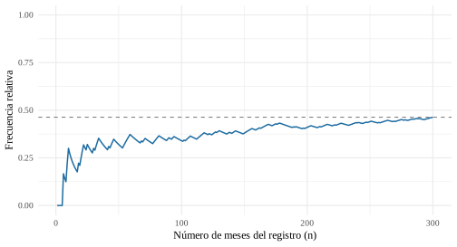
Tema 3
Probabilidad y estadística en hidrología
Presentación de clase basada en el libro Hidrología Aplicada a la Ingeniería Civil
Ing. Edwin Matarrita Segura
Escuela de Ingeniería Civil, Universidad de Costa Rica

Clases del tema
| Clase | Contenido | Capítulos del libro |
|---|---|---|
| 3.1 | Probabilidad y estadística descriptiva | 11 |
| 3.2 | Periodo de retorno y riesgo | 12 |
| 3.3 | Ajuste de modelos: supuestos, parámetros y papel de probabilidad | 13 |
| 3.4 | Distribuciones para valores medios | 14 |
| 3.5 | Distribuciones para valores extremos | 14 |
| 3.6 | Bondad de ajuste e incertidumbre del caudal de diseño | 14, 31 |
3.1 Probabilidad y estadística descriptiva
Capítulo 11 del libro
Diseñar sin conocer el futuro
Nadie sabe cuánto lloverá en octubre del próximo año ni cuál será la mayor crecida de los próximos 50 años. ¿Cómo se diseña entonces una obra?
- No se predice el valor: se estima qué tan probable es cada valor, y eso basta para diseñar.
- Se infieren las propiedades de una población (todos los valores posibles, pasados y futuros) a partir de una muestra (el registro, casi siempre de pocas décadas).
- Tres usos: diseño de obras, gestión del recurso y operación (pronóstico de crecidas y sequías).
En esta clase: eventos y probabilidad, sus reglas, variables aleatorias y sus distribuciones, y los estadísticos que resumen un registro.
Modelos e incertidumbre
Dos clases de modelos:
- Determinístico: leyes físicas; la misma entrada da siempre la misma salida (Saint-Venant).
- Estocástico: parte de la respuesta depende del azar y se describe con distribuciones de probabilidad (Thomas y Fiering).
Cuatro fuentes de incertidumbre:
- Variabilidad natural.
- Error de muestreo: registros cortos.
- Error de medición y de transcripción.
- No estacionariedad: urbanización, deforestación, cambio climático.
Quien hace el estudio hidrológico define los eventos de diseño, igual que quien diseña la estructura define las cargas.
Experimentos, eventos y variables
- Experimento aleatorio: puede dar resultados distintos aunque se repita en condiciones que parecen iguales. Medir el caudal máximo de cada año es uno.
- Espacio muestral \(\Omega\): todos los resultados posibles. Evento: un subconjunto de \(\Omega\).
- Evento simple (“sale un seis”) o compuesto (“el caudal máximo anual supera 500 m³/s”).
| Tipo de variable | Ejemplo |
|---|---|
| Cualitativa nominal | Cobertura: bosque, pasto, urbano |
| Cualitativa ordinal | Alerta verde, amarilla, naranja, roja |
| Cuantitativa discreta | Días con lluvia en un mes |
| Cuantitativa continua | Lluvia diaria (mm), caudal (m³/s) |
Las variables de diseño (lluvia, caudal, volumen) son continuas y de razón: el cero es ausencia, y 40 mm es el doble de 20 mm.
Probabilidad frecuentista
\[ P(A) = \lim_{n \to \infty} \frac{n_A}{n} \]
\(n_A\): número de veces que ocurre el evento \(A\) en \(n\) observaciones. La probabilidad es la frecuencia relativa cuando las observaciones son muchas.
- Fracción de meses con más de 300 mm en 25 años de registro.
- Con 5 años la estimación es 0.37; con los 25 años, 0.46.
- Un evento de 100 años casi nunca aparece más de una o dos veces en 25 años: su frecuencia relativa no sirve. Para eso están las distribuciones ajustadas.
Axiomas y regla de la suma
Axiomas:
- \(P(E) \ge 0\)
- \(P(\Omega) = 1\)
- Si los \(E_i\) son mutuamente excluyentes, \(P\left(\bigcup_i E_i\right) = \sum_i P(E_i)\)
Regla de la suma:
\[ P(A \cup B) = P(A) + P(B) - P(A \cap B) \]
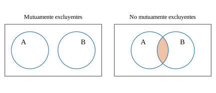
Una inundación en la desembocadura de un afluente puede deberse a la crecida del afluente (\(A\)), al remanso del río principal (\(B\)) o a las dos cosas.
Probabilidad condicional
¿Es igual de probable un mes de más de 300 mm en cualquier época del año?
Probabilidad condicional: probabilidad de \(A\) si se sabe que ocurrió \(B\).
\[ P(A \mid B) = \frac{P(A \cap B)}{P(B)} \]
Regla de la multiplicación: probabilidad de que ocurran \(A\) y \(B\) a la vez.
\[ P(A \cap B) = P(A \mid B)\, P(B) \]
- Independencia: \(P(A \mid B) = P(A)\), y entonces \(P(A \cap B) = P(A)\,P(B)\).
- Se cumple bien para máximos anuales, que ocurren en años distintos.
- No para valores diarios o mensuales: hay persistencia (la recesión) y estacionalidad.
Tratar como independientes valores que no lo son subestima la incertidumbre: una serie con persistencia tiene menos información de la que aparenta.
Ejemplo: lluvia mensual y época lluviosa
\(A\): el mes tiene más de 300 mm. \(B\): el mes es de mayo a noviembre. Estación de montaña, 1961–1985.
| Época lluviosa (B) | Época seca | Total | |
|---|---|---|---|
| Más de 300 mm (A) | 127 | 12 | 139 |
| 300 mm o menos | 48 | 113 | 161 |
| Total | 175 | 125 | 300 |
Solución:
- \(P(A) = \frac{139}{300} = 0.463\) y \(P(B) = \frac{175}{300} = 0.583\).
- \(P(A \cap B) = \frac{127}{300} = 0.423\).
- \(P(A \cup B) = 0.463 + 0.583 - 0.423 = 0.623\).
- \(P(A \mid B) = \frac{127}{175} = 0.726\).
- Independientes: \(0.463 \times 0.583 = 0.270 \ne 0.423\). No lo son.
Probabilidad total y teorema de Bayes
\(B_1, \ldots, B_k\): eventos mutuamente excluyentes que cubren todos los casos (por ejemplo, año con ciclón y sin ciclón); \(A\): el evento que interesa.
Probabilidad total: suma de \(A\) en cada caso, pesada por la probabilidad del caso.
\[ P(A) = \sum_{i=1}^{k} P(A \mid B_i)\, P(B_i) \]
Teorema de Bayes: invierte la condición, de \(P(A \mid B_j)\) a \(P(B_j \mid A)\).
\[ P(B_j \mid A) = \frac{P(A \mid B_j)\, P(B_j)}{\sum_{i} P(A \mid B_i)\, P(B_i)} \]
Ejemplo (datos hipotéticos): en 20 % de los años el máximo anual es de origen ciclónico (\(C\)). Con ciclón, la probabilidad de una crecida \(E\) de más de 500 m³/s es \(P(E \mid C) = 0.30\); sin ciclón, 0.02.
Solución:
- \(P(E) = 0.30 \times 0.20 + 0.02 \times 0.80 = 0.076\), es decir, \(T = \frac{1}{0.076} = 13\) años.
- \(P(C \mid E) = \frac{0.060}{0.076} = 0.79\).
Uno de cada cinco años es ciclónico, pero casi cuatro de cada cinco crecidas grandes lo son: conviene separar las poblaciones (clase 3.6).
Función de distribución y de densidad
\(X\): la variable aleatoria (por ejemplo, la lluvia anual); \(x\): un valor particular.
Función de distribución acumulada (FDA): probabilidad de no excedencia.
\[ F(x) = P(X \le x) \]
Función de densidad (FDP): probabilidad por unidad de \(x\), no una probabilidad.
\[ f(x) = \frac{dF(x)}{dx} \]
Probabilidad de un intervalo entre \(a\) y \(b\): área bajo la FDP.
\[ P(a \le X \le b) = \int_a^b f(x)\,dx \]

La probabilidad de excedencia es \(1 - F(x)\).
Ejemplo: probabilidad de no excedencia
Lluvia anual de la estación base, 1961–1985 (\(n = 25\) años): \(\bar x = 3298.3\) mm, \(s = 487.5\) mm. Sea \(X\) la lluvia de un año cualquiera. Preguntas, escritas con la notación de probabilidad:
- ¿Probabilidad de que un año llueva 3000 mm o menos? \(P(X \le 3000) = F(3000)\).
- ¿Probabilidad de que llueva entre 3000 y 3500 mm? \(P(3000 < X \le 3500) = F(3500) - F(3000)\).
- ¿Probabilidad de que llueva más de 4000 mm? \(P(X > 4000) = 1 - F(4000)\).
Solución con la distribución empírica: \(F(x)\) es la fracción de los 25 años con lluvia menor o igual que \(x\).
- 7 años con 3000 mm o menos: \(P(X \le 3000) = \frac{7}{25} = 0.28\).
- 10 años entre 3000 y 3500 mm: \(P(3000 < X \le 3500) = \frac{17}{25} - \frac{7}{25} = \frac{10}{25} = 0.40\).
- 3 años con más de 4000 mm: \(P(X > 4000) = 1 - \frac{22}{25} = \frac{3}{25} = 0.12\).
Ejemplo: la misma pregunta con una normal
Ahora \(F(x)\) es la FDA de una normal con la misma media y desviación: \(F(x) = \Phi(z)\), con \(z = \frac{x - \bar x}{s}\) y \(\Phi\) de la tabla normal.
Solución:
- \(P(X \le 3000)\): \(z = \frac{3000 - 3298.3}{487.5} = -0.61\), entonces \(P(X \le 3000) = \Phi(-0.61) = 1 - \Phi(0.61) = 1 - 0.7291 = 0.271\).
- \(P(3000 < X \le 3500)\): \(z = \frac{3500 - 3298.3}{487.5} = 0.41\) y \(\Phi(0.41) = 0.6591\), entonces \(P(3000 < X \le 3500) = F(3500) - F(3000) = 0.6591 - 0.2709 = 0.388\).
- \(P(X > 4000)\): \(z = \frac{4000 - 3298.3}{487.5} = 1.44\), entonces \(P(X > 4000) = 1 - \Phi(1.44) = 1 - 0.9251 = 0.075\).
| Pregunta | Empírica | Normal |
|---|---|---|
| \(P(X \le 3000)\) | 0.28 | 0.271 |
| \(P(3000 < X \le 3500)\) | 0.40 | 0.388 |
| \(P(X > 4000)\) | 0.12 | 0.075 |
En el centro coinciden; en la cola alta, no (0.12 frente a 0.075). Escoger el modelo que mejor representa la cola es el tema de las clases 3.3 a 3.6.
Estadísticos descriptivos
Un registro se resume con unos pocos números que describen su centro, su dispersión y su forma.
- Población: todos los valores posibles de la variable (desconocida). Sus valores se llaman parámetros y se escriben con letras griegas: \(\mu\), \(\sigma^2\), \(\sigma\).
- Muestra: los \(n\) datos medidos, \(x_1, x_2, \ldots, x_n\). Sus valores se llaman estadísticos y se escriben con letras latinas: \(\bar{x}\), \(s^2\), \(s\).
- Con un registro hidrológico siempre se tiene una muestra: los estadísticos estiman los parámetros de la población.
| Grupo | Qué describe | Estadísticos |
|---|---|---|
| Tendencia central | Dónde está el centro de los datos | Media, mediana, moda |
| Dispersión | Cuánto se alejan los datos del centro | Varianza, desviación estándar, rango, \(RIC\), \(CV\) |
| Forma | Simetría y peso de las colas | Asimetría \(C_s\), curtosis \(C_k\) |
Tendencia central
| Estadístico | Población | Muestra | Qué es |
|---|---|---|---|
| Media | \(\mu\) | \(\bar{x} = \dfrac{1}{n}\displaystyle\sum_{i=1}^{n} x_i\) | Centro de gravedad de los datos |
| Mediana | \(x_{0.50}\) | Dato central de la serie ordenada | Deja la mitad de los datos debajo |
| Moda | Valor o clase más frecuente | Pico del histograma |
- \(x_i\): dato \(i\); \(n\): número de datos.
- Con \(n\) par, la mediana es el promedio de los dos datos centrales.
- Cuartiles: \(x_{0.25}\) y \(x_{0.75}\) dejan debajo la cuarta parte y las tres cuartas partes de los datos.
- En una distribución simétrica las tres coinciden; con asimetría positiva (caudales máximos), la media queda a la derecha de la mediana.
Dispersión
| Estadístico | Población | Muestra | Unidades |
|---|---|---|---|
| Varianza | \(\sigma^2 = \dfrac{1}{N}\displaystyle\sum_{i=1}^{N} (x_i - \mu)^2\) | \(s^2 = \dfrac{1}{n-1}\displaystyle\sum_{i=1}^{n} (x_i - \bar{x})^2\) | Las de \(x\) al cuadrado |
| Desviación estándar | \(\sigma = \sqrt{\sigma^2}\) | \(s = \sqrt{s^2}\) | Las de \(x\) |
| Coeficiente de variación | \(\dfrac{\sigma}{\mu}\) | \(CV = \dfrac{s}{\bar{x}}\) | Adimensional |
| Rango | \(x_{\max} - x_{\min}\) | Las de \(x\) | |
| Rango intercuartílico | \(RIC = x_{0.75} - x_{0.25}\) | Las de \(x\) |
- \(N\): tamaño de la población; \(n\): tamaño de la muestra.
- La varianza muestral divide entre \(n - 1\) para no subestimar \(\sigma^2\): la media \(\bar{x}\) ya se calculó con los mismos datos.
- El \(CV\) es una dispersión relativa: sirve para comparar series con medias distintas (lluvia anual de montaña: \(CV\) bajo; caudales máximos de un río pequeño: alto).
Forma
Coeficiente de asimetría, \(C_s\) (adimensional): muestral, con la corrección por tamaño de muestra de Chow et al. (1988).
\[ C_s = \frac{n \sum_{i=1}^{n} (x_i - \bar{x})^3}{(n-1)(n-2)\, s^3} \]
- \(C_s > 0\): cola larga hacia los valores altos.
- \(C_s = 0\): simétrica; \(C_s < 0\): cola hacia los bajos.
Curtosis, \(C_k\) (adimensional): peso de las colas.
\[ C_k = \frac{m_4}{m_2^{2}}, \quad m_k = \frac{1}{n}\sum_{i=1}^{n} (x_i - \bar{x})^k \]
- \(m_k\): momento central muestral de orden \(k\) (\(m_2\) es la varianza dividida entre \(n\)).
- \(C_k > 3\): más valores extremos que la normal.
- La normal tiene \(C_s = 0\) y \(C_k = 3\).
- Usan potencias altas de las desviaciones: con registros cortos varían mucho de una muestra a otra.
Asimetría y curtosis

- \(C_s > 0\): cola larga hacia los valores altos (lluvias intensas, crecidas).
- \(C_k > 3\): más valores extremos que la normal. Algunos programas reportan el exceso, \(C_k - 3\).
- Con registros cortos, \(C_s\) y \(C_k\) cambian mucho de una muestra a otra.
Ejemplo: estadísticos de la lluvia anual
Estación base, \(n = 25\) años. Solución:
- \(\bar{x} = \frac{82\,457.4}{25} = 3298.3\) mm; mediana (dato 13): 3158.7 mm.
- \(s = \sqrt{\frac{5\,703\,021}{24}} = 487.5\) mm.
- Cuartiles (datos 7 y 19): 2975.0 y 3519.6 mm; \(RIC = 544.6\) mm.
- \(CV = \frac{487.5}{3298.3} = 0.148\).
- \(C_s = \frac{25 \times 1.906 \times 10^{9}}{24 \times 23 \times 487.5^3} = 0.745\).
- \(C_k = \frac{1.421 \times 10^{11}}{228\,121^2} = 2.73\).
- Poca variación: \(s\) es el 15 % de la media.
- Asimetría positiva: los años muy lluviosos se alejan más que los secos, y la media queda 140 mm sobre la mediana.
- \(C_k\) cercano a 3: con 25 datos no se concluye nada sobre las colas.
El mismo cálculo en R
library(tidyverse)
# 1) Lluvia anual (mm)
anual <- read_csv("../datos/lluvia_mensual_dos_estaciones.csv") %>%
group_by(anio) %>%
summarise(p = sum(base_mm))
x <- anual$p
n <- length(x)
# 2) Centro y dispersión
media <- mean(x)
s <- sd(x) # divide entre n - 1
cuartiles <- quantile(x, c(0.25, 0.50, 0.75))
# 3) Coeficientes de forma con las ecuaciones del texto
cv <- s / media
cs <- n * sum((x - media)^3) / ((n - 1) * (n - 2) * s^3)
m2 <- mean((x - media)^2)
m4 <- mean((x - media)^4)
ck <- m4 / m2^2
round(c(media = media, mediana = cuartiles[[2]], s = s,
ric = cuartiles[[3]] - cuartiles[[1]], cv = cv, cs = cs, ck = ck), 3)moments::skewness() no aplica la corrección por tamaño de muestra de la ecuación de \(C_s\).
Medidas resistentes
Una medida es resistente si cambia poco cuando se altera una pequeña parte de los datos, aunque el cambio sea grande.
Ejemplo: cinco lluvias mensuales (mm), y las mismas con el último dato mal digitado (1600 en vez de 160):
| Datos (mm) | \(\bar{x}\) | \(s\) | Mediana | \(RIC\) |
|---|---|---|---|---|
| 120, 135, 140, 150, 160 | 141 | 15.2 | 140 | 15 |
| 120, 135, 140, 150, 1600 | 429 | 654.7 | 140 | 15 |
- La media y la desviación estándar usan el valor de cada dato: un error las arrastra. No son resistentes.
- La mediana y los cuartiles solo dependen del orden de los datos: no cambian. Son resistentes.
- Al revisar un registro se comparan las dos clases de medidas: si difieren mucho, hay que buscar datos erróneos.
Diagrama de caja
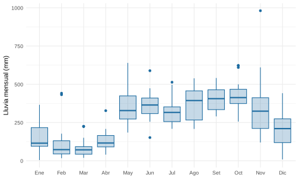
El diagrama de caja se dibuja solo con medidas resistentes; por eso un valor extremo no deforma la caja:
- Línea interior: mediana.
- Caja: del primer al tercer cuartil (\(x_{0.25}\) a \(x_{0.75}\)); su altura es el \(RIC\).
- Bigotes: hasta el dato más alejado dentro de 1.5 \(RIC\) desde la caja.
- Puntos sueltos: datos más allá de los bigotes. Se revisan, pero no son por fuerza errores: noviembre de 1983 (980.9 mm) también fue excepcional en la estación vecina.
Un dato mal digitado
Valor real: 2561.6 mm. Con la coma corrida queda 25 616 mm (factor 10).
Con el factor 10, la media sube 28 % y la desviación estándar se multiplica por nueve; la mediana y el \(RIC\) casi no cambian.
Relación entre dos variables
Coeficiente de correlación de Pearson, \(r\)
\[ r = \frac{\sum (x_i - \bar{x})(y_i - \bar{y})}{\sqrt{\sum (x_i - \bar{x})^2 \, \sum (y_i - \bar{y})^2}} \]
- \(x_i\), \(y_i\): valores del par \(i\); \(\bar{x}\), \(\bar{y}\): sus medias.
- Mide la relación lineal; va de −1 a 1.
- Usa medias y desviaciones: no es resistente.
Coeficiente de correlación de Spearman, \(\rho_s\)
\[ \rho_s = 1 - \frac{6 \sum d_i^{2}}{n\,(n^2 - 1)} \]
- \(d_i\): diferencia entre el rango (número de orden) de \(x_i\) y el de \(y_i\); \(n\): número de pares.
- Es el \(r\) de Pearson calculado con los rangos: mide si la relación es monótona, aunque no sea lineal.
- Casi no cambia con un dato erróneo: es resistente.
Ejemplo: correlación entre dos estaciones
Lluvia anual de dos estaciones vecinas, 21 años completos. Solución:
- Pearson: \(r = \dfrac{1\,054\,029}{\sqrt{4\,675\,371 \times 9\,788\,579}} = 0.156\).
- Spearman: se ordena cada serie, se restan los rangos de cada año y \(\sum d_i^2 = 1124\); \(\rho_s = 1 - \dfrac{6\,(1124)}{21\,(21^2-1)} = 0.270\).
- Prueba de que \(r\) es distinto de cero, con el estadístico \(t_c = \dfrac{r\sqrt{n-2}}{\sqrt{1-r^2}} = \dfrac{0.156\sqrt{19}}{\sqrt{1 - 0.156^2}} = 0.688\).
- \(t_c\) se compara con el valor crítico de la distribución t de Student con \(n - 2 = 19\) grados de libertad: \(0.688 < t_{0.975;\,19} = 2.093\). No se rechaza que la correlación anual sea nula.
La lluvia mensual tiene \(r = 0.706\), casi todo por el ciclo estacional compartido.
3.2 Periodo de retorno y riesgo
Capítulo 12 del libro
El riesgo durante la vida útil
Una alcantarilla se diseña para el caudal de 50 años y durará 50 años. ¿Qué probabilidad hay de que ese caudal se exceda mientras exista?
- La obra se diseña para un evento que quizá nunca ocurrió en el registro.
- Hacen falta tres ideas: la probabilidad anual de excedencia, el periodo de retorno, que la traduce a años, y el riesgo durante la vida útil.
- Además, con qué serie de datos se estiman.
En esta clase: excedencia, periodo de retorno y nivel de retorno, riesgo hidrológico, diseño hidroeconómico y series para el análisis de frecuencia.
Probabilidad de excedencia y periodo de retorno
Probabilidad anual de excedencia, \(p\): probabilidad de que en un año cualquiera se iguale o supere el valor \(x\).
\[ p = P(X \ge x) = 1 - F(x) \]
\(X\): máximo anual; \(F(x)\): probabilidad de no excedencia (FDA).
Periodo de retorno, \(T\): tiempo promedio, en años, entre dos eventos que igualan o superan \(x\).
\[ T = \frac{1}{p} \]
Con años independientes, el número de años \(\tau\) hasta la primera excedencia sigue una distribución geométrica, cuyo promedio es \(T\): \(E(\tau) = \frac{1}{p} = T\).
Si el año pasado ocurrió la crecida de 100 años, ¿es menos probable que ocurra este año?
No: sigue siendo 0.01 cada año. \(T\) es un promedio, no un calendario.
Nivel de retorno: qué es
Nivel de retorno \(x_T\): el valor que se iguala o se supera, en promedio, una vez cada \(T\) años. Se obtiene leyendo la FDA al revés.
De \(T\) a \(x_T\) (diseño):
- Periodo de retorno \(T\) (lo fija la norma).
- Probabilidad de excedencia: \(p = \frac{1}{T}\).
- Probabilidad de no excedencia: \(F = 1 - p\).
- Valor que deja esa probabilidad debajo: \(x_T = F^{-1}(F)\).
\[ x_T = F^{-1}\!\left(1 - \frac{1}{T}\right) \]
\(F^{-1}\): función inversa de la FDA (el cuantil).
De \(x\) a \(T\) (revisión de un evento):
- Valor observado \(x\).
- Probabilidad de no excedencia \(F(x)\), de la FDA.
- Probabilidad de excedencia: \(p = 1 - F(x)\).
- Periodo de retorno: \(T = \frac{1}{p}\).
Con la normal, el paso por \(F\) se hace con la variable estándar \(z = \frac{x - \bar{x}}{s}\) y la tabla de \(\Phi(z)\) (clase 3.4): \(x_T = \bar{x} + z\,s\).
Ejemplo: nivel de retorno con la normal
Lluvia anual normal con \(\bar{x} = 3298.3\) mm y \(s = 487.5\) mm (clase 3.1). Solución:
| Pregunta | \(T\) | \(p = \frac{1}{T}\) | \(F = 1 - p\) | \(z\) (tabla) | \(x = \bar{x} + z\,s\) |
|---|---|---|---|---|---|
| Lluvia de 10 años | 10 | 0.10 | 0.90 | 1.282 | \(3298.3 + 1.282 \times 487.5 = 3923\) mm |
| Lluvia de 50 años | 50 | 0.02 | 0.98 | 2.054 | \(3298.3 + 2.054 \times 487.5 = 4300\) mm |
Camino inverso, ¿qué periodo de retorno tiene un año de 4000 mm?
- \(z = \dfrac{4000 - 3298.3}{487.5} = 1.44\).
- Tabla: \(F = \Phi(1.44) = 0.925\).
- \(p = 1 - 0.925 = 0.075\) y \(T = \dfrac{1}{0.075} = 13\) años.
En R: qnorm(1 - 1/c(10, 50), mean = 3298.3, sd = 487.5) y 1/(1 - pnorm(4000, 3298.3, 487.5)). En 25 años hubo tres sobre 4000 mm, más de lo que espera la normal.
Periodos de retorno de diseño
| Obra | \(T\) (años) |
|---|---|
| Alcantarillas de carreteras de poco tránsito | 5–10 |
| Alcantarillas de carreteras de mucho tránsito | 50–100 |
| Puentes de carreteras secundarias | 10–50 |
| Puentes de carreteras principales | 50–100 |
| Alcantarillado pluvial en ciudades grandes | 25–50 |
| Diques alrededor de ciudades | 50–200 |
Son criterios de Estados Unidos y sirven como orden de magnitud. En cada proyecto manda la norma, el reglamento o el cartel de la institución.
Periodos de retorno en las normas
| Obra | Criterio | Fuente |
|---|---|---|
| Alcantarillado pluvial, Costa Rica | \(T \ge 10\) años; método racional hasta 100 ha; \(t_c\) mínimo de 10 min | AyA (Instituto Costarricense de Acueductos y Alcantarillados, 2017) |
| Calles locales de bajo tránsito | 5 años, con ancho de inundación de medio carril | FHWA (Brown et al., 2009) |
| Calles colectoras y de alto volumen | 10 años; 50 años en puntos bajos de vías de alto volumen | FHWA (Brown et al., 2009) |
| Colectores pluviales | 10 años como mínimo, revisión con 100 años | FHWA (Brown et al., 2009) |
| Puentes en Centroamérica | 100 años y 1 m de borde libre bajo la viga | SIECA (Secretaría de Integración Económica Centroamericana, 2021) |
| Vertedor de presa menor rural, sin vidas en riesgo | 50 a 200 años | USBR (U.S. Bureau of Reclamation, 1987) |
| Presa cuya falla pondría en peligro vidas | Creciente máxima probable | USBR (U.S. Bureau of Reclamation, 1987) |
El MOPT, el CONAVI y las municipalidades pueden exigir criterios más estrictos en sus proyectos: siempre se verifica la versión vigente de la norma que aplica.
Riesgo hidrológico
Probabilidad de que el evento de diseño se iguale o se exceda al menos una vez en \(n\) años de vida útil. El número de excedencias es binomial:
Número de excedencias \(K\) en \(n\) años de vida útil (distribución binomial), con \(p = \frac{1}{T}\):
\[ P(K = k) = \binom{n}{k}\, p^{k}\, (1 - p)^{n-k} \]
Riesgo \(R\): probabilidad de al menos una excedencia, \(R = 1 - P(K = 0)\); y el \(T\) necesario para un riesgo dado:
\[ R = 1 - \left(1 - \frac{1}{T}\right)^{n} \qquad\Longrightarrow\qquad T = \frac{1}{1 - (1 - R)^{1/n}} \]

- Con \(n = T\) el riesgo es casi 64 %: \((1 - \frac{1}{T})^T \to e^{-1} = 0.368\).
- En 25 años: 93 % para \(T = 10\) y 5 % para \(T = 500\).
- La confiabilidad es \(1 - R\).
Ejemplo: riesgo de una alcantarilla
\(T = 50\) años y vida útil \(n = 50\) años. Calcule el riesgo, \(P(K = 1)\) y \(P(K \ge 2)\), y el \(T\) necesario para un riesgo de 10 % en 25 años.
Solución:
- \((1 - \frac{1}{50})^{50} = 0.98^{50} = 0.364\), así que \(R = 0.636\).
- \(P(K = 1) = 50 \times 0.02 \times 0.98^{49} = 0.372\).
- \(P(K \ge 2) = 1 - 0.364 - 0.372 = 0.264\).
- \((1 - 0.10)^{1/25} = 0.99579\) y \(T = \frac{1}{1 - 0.99579} = 238\) años.
El periodo de retorno no garantiza que la obra no falle durante ese tiempo.
Riesgo y vida útil
Supone años independientes y estacionariedad; con urbanización o cambio climático el riesgo real es mayor.
Diseño hidroeconómico
Al subir \(T\) la obra cuesta más, pero los daños esperados bajan. El óptimo minimiza la suma anual de los dos.
\[ \Delta D_i = \frac{D_{i-1} + D_i}{2}\,(p_{i-1} - p_i) \]
\(D_i\): daño que causa el evento de periodo de retorno \(T_i\) ($); \(p_i = \frac{1}{T_i}\); \(\Delta D_i\): daño anual esperado del intervalo entre \(T_{i-1}\) y \(T_i\) ($/año). Sumando los intervalos se obtiene el daño anual esperado.

Ejemplo 13.2.3 de Chow et al. (1988). Solución:
- De 1 a 2 años: \(10\,000 \times 0.5 = 5000\) $/año.
- Suma de intervalos: 49 098 $/año sin obra.
- \(T = 25\): \(11\,250 + 29\,000 = 40\,250\) $/año, el mínimo.
Series para el análisis de frecuencia
Serie de máximos anuales:
- El mayor valor de cada año hidrológico.
- Sencilla y casi siempre independiente.
- Descarta el segundo evento de un año lluvioso.
Serie de duración parcial:
- Todos los eventos independientes sobre un umbral.
- Si hay tantos eventos como años: serie de excedencias anuales.
- Hay que asegurar que dos picos sean eventos distintos.
Relación de Langbein, si las excedencias siguen un proceso de Poisson (Langbein, 1949):
\[ T = \frac{1}{1 - e^{-1/T_E}} \]
\(T\): periodo de retorno en la serie de máximos anuales; \(T_E\): periodo de retorno en la serie de duración parcial (años).
Ejemplo: dos series del mismo registro
Caudal medio mensual de una estación de montaña, 1967–1987; umbral de 18 m³/s y meses seguidos sobre el umbral como un solo evento.
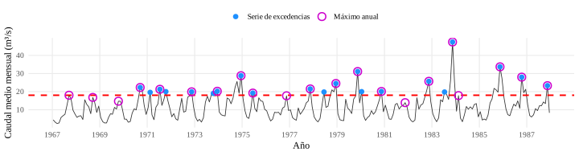
Las dos series tienen 21 valores, pero no los mismos: seis años secos no entran en la de excedencias, que suma segundas y terceras crecidas de años lluviosos. ⬇ Descargar caudal_mensual_estacion_montana.csv
3.3 Ajuste de modelos: supuestos, parámetros y papel de probabilidad
Capítulo 13 del libro
Estimar más allá del registro
Si un registro tiene 25 años, ¿se puede estimar la crecida de 100 años?
- Sí, y es lo que se hace casi siempre: para eso sirve un modelo de probabilidad ajustado a la muestra.
- Lo que no se puede es tratar ese número como exacto.
- Tres pasos: revisar los supuestos, estimar los parámetros y comparar el modelo con los datos.
En esta clase: modelos paramétricos, pruebas de independencia, tendencia y atípicos, métodos de estimación, posiciones de graficación y papel de probabilidad.
Población, muestra y modelo

- Paramétrico: forma conocida con pocos parámetros. Extrapola, pero si la forma es errónea el error crece en la cola.
- No paramétrico (histograma, frecuencia empírica, núcleos): no impone forma, pero no extrapola.
- Cinco muestras de 20 años de la misma Gumbel: la crecida de 100 años va de 280 a 430 m³/s; la de la población es 381 m³/s.
Esa diferencia no es un error de cálculo: es la incertidumbre de estimar con 20 datos (datos hipotéticos).
Supuestos del análisis de frecuencia
- Independencia: un valor no depende de los anteriores. Los máximos anuales suelen cumplirlo; las series diarias o mensuales, no.
- Estacionariedad: media, varianza y forma no cambian con el tiempo. La rompen la urbanización, la deforestación, un embalse o el cambio climático.
- Homogeneidad: todos los datos vienen de la misma población. La rompen las crecidas de origen distinto o un cambio de sitio o de instrumento.
Un año con meses faltantes en la época lluviosa no entra en la serie de máximos como si estuviera completo: su máximo podría estar en los meses sin dato.
Con registros cortos conviene extender la serie con una estación vecina, usar información regional o, al menos, informar el intervalo de confianza.
Cómo funciona una prueba de hipótesis
Antes de ajustar una distribución se comprueba que la serie sea independiente, sin tendencia y sin atípicos. Cada comprobación es una prueba de hipótesis, y todas siguen los mismos pasos:
- Hipótesis nula \(H_0\): sin tendencia, independiente, o los datos siguen \(F_0\).
- Estadístico de prueba con distribución conocida si \(H_0\) es cierta (\(Z\), \(t\), \(D\)).
- Nivel de significancia \(\alpha\), fijado antes de calcular (casi siempre 0.05).
- Decisión: se rechaza \(H_0\) si el estadístico cae fuera de la región de aceptación o, lo que es igual, si \(p \le \alpha\). Con un estadístico normal \(z\), \(p = 2\,[1 - \Phi(|z|)]\) en dos colas.
| Prueba | Para qué |
|---|---|
| Límites de Anderson y Mann-Kendall | Independencia y tendencia |
| Grubbs y Beck | Valores atípicos |
| Chi-cuadrado, Kolmogórov-Smirnov y Anderson-Darling | Bondad de ajuste |
Errores de una prueba
Una prueba puede equivocarse de dos maneras. \(\alpha\) se fija; \(\beta\) depende del tamaño de la muestra y de qué tan falsa sea \(H_0\).
| Decisión | \(H_0\) cierta | \(H_0\) falsa |
|---|---|---|
| Se rechaza | Error tipo I (\(\alpha\)) | Correcta (potencia \(1 - \beta\)) |
| No se rechaza | Correcta (\(1 - \alpha\)) | Error tipo II (\(\beta\)) |
\(p\): probabilidad de obtener un estadístico tan extremo como el observado si \(H_0\) fuera cierta. No rechazar no es demostrar. Con \(k\) pruebas a la vez, \(P(\text{al menos un falso positivo}) = 1 - (1 - \alpha)^k\): 0.46 con 12 estaciones.
Independencia: autocorrelación de orden 1
Si un año alto tiende a seguir a otro alto, los datos no son independientes. Se mide con la correlación de cada dato con el siguiente:
\[ r_1 = \dfrac{\sum_{t=1}^{n-1} (x_t - \bar{x})(x_{t+1} - \bar{x})}{\sum_{t=1}^{n} (x_t - \bar{x})^2} \]
Límites de Anderson (5 %):
\[ \dfrac{-1 - 1.96\sqrt{n-2}}{n-1} \le r_1 \le \dfrac{-1 + 1.96\sqrt{n-2}}{n-1} \]
| Símbolo | Qué es |
|---|---|
| \(x_t\) | Dato del año \(t\) |
| \(\bar{x}\) | Media de la serie |
| \(n\) | Número de datos |
| \(r_1\) | Autocorrelación de orden 1: correlación de cada dato con el siguiente |
- \(H_0\): \(r_1 = 0\) (serie independiente). Si \(r_1\) queda dentro de los límites, no se rechaza.
- Los límites no son un intervalo de confianza de \(r_1\): son la región de aceptación de la prueba.
Tendencia: prueba de Mann-Kendall
No supone que la tendencia sea lineal ni que los datos sigan una distribución. Compara cada dato con todos los posteriores:
\[ S = \sum_{i=1}^{n-1} \sum_{j=i+1}^{n} \operatorname{sgn}(x_j - x_i) \]
\[ V(S) = \dfrac{n(n-1)(2n+5)}{18} \]
\[ Z = \dfrac{S - \operatorname{sgn}(S)}{\sqrt{V(S)}} \]
| Símbolo | Qué es |
|---|---|
| \(x_i\), \(x_j\) | Datos de los años \(i\) y \(j\), con \(j > i\) |
| \(\operatorname{sgn}\) | Signo: \(+1\) si sube, \(-1\) si baja, 0 si son iguales |
| \(S\) | Estadístico de Mann-Kendall: suma de todos los signos |
| \(V(S)\) | Varianza de \(S\) si no hay tendencia |
| \(Z\) | Estadístico normalizado |
- \(H_0\): no hay tendencia. Hay tendencia al 5 % si \(|Z| > 1.96\).
- La persistencia se parece a una tendencia: con autocorrelación se corrige \(V(S)\) (Hamed & Rao, 1998). La magnitud se estima con la pendiente de Sen.
Potencia de la prueba de Mann-Kendall
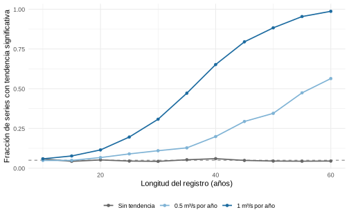
- Series simuladas con media 100 m³/s y desviación 30 m³/s (datos hipotéticos).
- Sin tendencia, la prueba rechaza cerca del 5 %, como debe.
- Con 0.5 m³/s por año, detecta la tendencia en menos de 1 de cada 10 registros de 20 años.
Con registros de 20 a 30 años, no encontrar tendencia es lo esperable aunque exista.
Valores atípicos: umbrales
Un dato es atípico si queda muy lejos del resto de la serie. Los umbrales del U.S. Water Resources Council se calculan con los logaritmos de los caudales (Chow et al., 1988):
\[ y_H = \bar{y} + K_n\, s_y \qquad\qquad y_L = \bar{y} - K_n\, s_y \]
| Símbolo | Qué es | Unidad |
|---|---|---|
| \(Q\) | Caudal máximo anual | m³/s |
| \(y\) | Logaritmo del caudal, \(y = \log_{10} Q\) | — |
| \(\bar{y}\), \(s_y\) | Media y desviación estándar de los \(y\) | — |
| \(y_H\) | Umbral alto: un dato con \(y > y_H\) es atípico alto | — |
| \(y_L\) | Umbral bajo: un dato con \(y < y_L\) es atípico bajo | — |
| \(K_n\) | Factor que depende de \(n\) (cuadro de la derecha) | — |
| \(n\) | Número de datos de la serie | — |
| \(n\) | \(K_n\) |
|---|---|
| 10 | 2.036 |
| 20 | 2.385 |
| 30 | 2.563 |
| 50 | 2.768 |
Los umbrales se devuelven a caudal con \(Q = 10^{y}\).
Qué hacer con un atípico
- Atípico alto: se compara con información histórica antes de tocarlo. Si fue real, es el dato más valioso de la serie y se conserva.
- Atípico bajo: es común en ríos del Pacífico, donde el máximo de un año muy seco puede ser una crecida pequeña que no se parece a las demás.
- Boletín 17C (England et al., 2019):
- Los atípicos altos se conservan.
- Los bajos se buscan con la prueba de Grubbs y Beck múltiple.
- Los bajos se tratan como datos censurados: se sabe que el caudal fue menor que el umbral, pero no se usa su valor.
Ejemplo: independencia
Caudal máximo anual de 1984 a 2023, \(n = 40\) años (datos hipotéticos). ¿Es una serie independiente y sin tendencia?

Solución:
- Media: \(\bar{x} = 54.07\) m³/s.
- Desvío de cada año: \(x_t - \bar{x}\). Por ejemplo, 1984: \(33.8 - 54.07 = -20.27\).
- Numerador de \(r_1\): suma de los productos de cada desvío por el del año siguiente, \(\sum_{t=1}^{39} (x_t - \bar{x})(x_{t+1} - \bar{x}) = 167.4\).
- Denominador: suma de los desvíos al cuadrado, \(\sum_{t=1}^{40} (x_t - \bar{x})^2 = 5085.4\).
- \(r_1 = \frac{167.4}{5085.4} = 0.033\).
- Límites con \(n = 40\): \(\frac{-1 - 1.96\sqrt{38}}{39} = -0.335\) y \(\frac{-1 + 1.96\sqrt{38}}{39} = 0.284\).
- \(-0.335 < 0.033 < 0.284\): no se rechaza la independencia.
Ejemplo: tendencia con Mann-Kendall
Misma serie de 40 años. Solución:
- Pares de años que se comparan: \(\frac{n(n-1)}{2} = \frac{40 \times 39}{2} = 780\).
- Cada par suma \(+1\) si el caudal posterior es mayor y \(-1\) si es menor:
| Año \(i\) | \(x_i\) (m³/s) | Posteriores mayores | Posteriores menores | Aporte a \(S\) |
|---|---|---|---|---|
| 1984 | 33.8 | 38 | 1 | \(38 - 1 = 37\) |
| 1985 | 43.7 | 32 | 6 | \(32 - 6 = 26\) |
| 1986 | 57.4 | 13 | 24 | \(13 - 24 = -11\) |
| ⋮ | ⋮ | ⋮ | ⋮ | ⋮ |
| Total | 540 | 240 | \(S = 540 - 240 = 300\) |
- Varianza sin valores repetidos: \(V(S) = \frac{40 \times 39 \times 85}{18} = 7366.7\), con \(2n + 5 = 85\).
- \(Z = \frac{S - \operatorname{sgn}(S)}{\sqrt{V(S)}} = \frac{300 - 1}{\sqrt{7366.7}} = \frac{299}{85.83} = 3.48\). Como \(S > 0\), \(\operatorname{sgn}(S) = 1\): se resta 1 (corrección de continuidad, porque \(S\) es entero).
- \(|Z| = 3.48 > 1.96\): se rechaza \(H_0\); hay tendencia creciente (\(p = 0.0005\)).
Ejemplo: valores atípicos
Otra serie: 20 caudales máximos anuales (m³/s, datos hipotéticos): 32.5, 46.0, 68.9, 81.3, 97.8, 98.2, 101, 104, 104, 115, 120, 131, 142, 144, 155, 198, 206, 269, 271 y 319.
Solución:
- Logaritmo de cada caudal, \(y = \log_{10} Q\). Por ejemplo, \(\log_{10} 319 = 2.504\) y \(\log_{10} 32.5 = 1.512\).
- Media y desviación estándar de los 20 logaritmos: \(\bar{y} = 2.084\) y \(s_y = 0.248\).
- Con \(n = 20\), el cuadro de la diapositiva de umbrales da \(K_{20} = 2.385\).
- Umbral alto: \(y_H = 2.084 + 2.385 \times 0.248 = 2.675\), es decir, \(Q_H = 10^{2.675} = 473\) m³/s.
- Umbral bajo: \(y_L = 2.084 - 2.385 \times 0.248 = 1.493\), es decir, \(Q_L = 10^{1.493} = 31.1\) m³/s.
- Comparación: el mayor caudal, 319 m³/s, es menor que 473; el menor, 32.5 m³/s, es mayor que 31.1. No hay atípicos, aunque el menor queda muy cerca del umbral bajo.
Estimar los parámetros de una distribución
Una distribución tiene una forma fija y unos pocos parámetros. Estimarlos es escoger los valores con los que el modelo se parece más a los datos. Se ilustra con la Gumbel:
\[ F(x) = \exp\left\{-\exp\left[-\dfrac{x - u}{\alpha}\right]\right\} \]
| Símbolo | Qué es | Unidad |
|---|---|---|
| \(x\) | Caudal máximo anual | m³/s |
| \(F(x)\) | Probabilidad de no excedencia de \(x\) (FDA) | — |
| \(u\) | Parámetro de posición (la moda) | m³/s |
| \(\alpha\) | Parámetro de escala (la dispersión) | m³/s |
Tres métodos: momentos, máxima verosimilitud y L-momentos. Los tres se aplican a la misma serie de 20 caudales (m³/s, datos hipotéticos): 32.5, 46.0, 68.9, 81.3, 97.8, 98.2, 101, 104, 104, 115, 120, 131, 142, 144, 155, 198, 206, 269, 271 y 319. ⬇ Descargar caudal_maximo_anual_ejemplo.csv
Método de momentos
Se igualan la media y la varianza del modelo a las de los datos. Para la Gumbel:
\[ \alpha = \dfrac{\sqrt{6}\, s}{\pi} \qquad u = \bar{x} - 0.5772\,\alpha \]
| Símbolo | Qué es | Unidad |
|---|---|---|
| \(\bar{x}\) | Media de los datos | m³/s |
| \(s\) | Desviación estándar muestral | m³/s |
| 0.5772 | Constante de Euler | — |
Ejemplo con los 20 caudales. Solución:
- Media: \(\bar{x} = \frac{32.5 + 46.0 + \cdots + 319}{20} = 140.19\) m³/s.
- Desviación estándar: \(s = \sqrt{\frac{\sum (x_i - \bar{x})^2}{19}} = 76.59\) m³/s.
- Escala: \(\alpha = \frac{\sqrt{6} \times 76.59}{\pi} = 59.72\) m³/s.
- Posición: \(u = 140.19 - 0.5772 \times 59.72 = 105.72\) m³/s.
Es sencillo, pero un dato extremo pesa mucho en \(s\).
Método de máxima verosimilitud
Se buscan los parámetros que hacen más probable la muestra observada:
\[ \ln L(\theta) = \sum_{i=1}^{n} \ln f(x_i;\, \theta) \]
| Símbolo | Qué es |
|---|---|
| \(\theta\) | Parámetros del modelo; en la Gumbel, \(u\) y \(\alpha\) |
| \(f(x;\,\theta)\) | FDP del modelo con esos parámetros |
| \(x_i\), \(n\) | Dato \(i\) y número de datos |
| \(L(\theta)\) | Verosimilitud: qué tan probable es la muestra con \(\theta\) |
Para la Gumbel, cada dato aporta:
\[ \ln f(x_i) = -\ln \alpha - \dfrac{x_i - u}{\alpha} - e^{-(x_i - u)/\alpha} \]
Ejemplo con los 20 caudales. Solución:
- Con los valores de momentos (\(u = 105.72\), \(\alpha = 59.72\)): \(\ln L = -112.600\).
- Se prueban otros pares \((u, \alpha)\) hasta que \(\ln L\) no aumente más; se hace con un programa (
fevd()en R). - Máximo: \(u = 106.6\) y \(\alpha = 56.15\) m³/s, con \(\ln L = -112.528\).
Da errores estándar de los parámetros, pero puede ser inestable con tres parámetros y pocos datos.
Método de L-momentos
Usa los datos ordenados de menor a mayor; casi no tiene sesgo con muestras pequeñas (Hosking, 1990).
- Momentos ponderados por probabilidad:
\[ b_0 = \bar{x} \qquad b_1 = \dfrac{1}{n} \sum_{j=1}^{n} \dfrac{j-1}{n-1}\, x_{(j)} \]
- L-momentos: \(\lambda_1 = b_0\) y \(\lambda_2 = 2b_1 - b_0\).
- Gumbel: \(\alpha = \dfrac{\lambda_2}{\ln 2}\) y \(u = \lambda_1 - 0.5772\,\alpha\).
| Símbolo | Qué es | Unidad |
|---|---|---|
| \(x_{(j)}\) | Dato de orden \(j\), de menor a mayor | m³/s |
| \(b_0\), \(b_1\) | Momentos ponderados por probabilidad | m³/s |
| \(\lambda_1\) | Primer L-momento: la media | m³/s |
| \(\lambda_2\) | Segundo L-momento: la dispersión | m³/s |
Ejemplo con los 20 caudales. Solución:
- Orden de menor a mayor: \(x_{(1)} = 32.5\), …, \(x_{(20)} = 319\).
- \(b_0 = \bar{x} = 140.19\) m³/s.
- Cada dato se pesa con \(\frac{j-1}{19}\):
\[ \small b_1 = \tfrac{1}{20}\left(\tfrac{0}{19}\,32.5 + \tfrac{1}{19}\,46.0 + \cdots + \tfrac{19}{19}\,319\right) = 91.25 \]
- \(\lambda_2 = 2 \times 91.25 - 140.19 = 42.32\) m³/s.
- \(\alpha = \frac{42.32}{0.6931} = 61.05\) m³/s.
- \(u = 140.19 - 0.5772 \times 61.05 = 104.94\) m³/s.
Ejemplo: caudal de 100 años por los tres métodos
Con la Gumbel, \(x_T = u + \alpha\, y_T\), donde \(y_T\) es la variable reducida (clase 3.5). Solución:
- Variable reducida para \(T = 100\) años: \(y_{100} = -\ln\left[-\ln\left(1 - \dfrac{1}{100}\right)\right] = 4.600\).
- Caudal con cada par de parámetros:
| Método | \(u\) (m³/s) | \(\alpha\) (m³/s) | \(x_{100} = u + 4.600\,\alpha\) (m³/s) |
|---|---|---|---|
| Momentos | 105.72 | 59.72 | \(105.72 + 4.600 \times 59.72 = 380\) |
| Máxima verosimilitud | 106.6 | 56.15 | \(106.6 + 4.600 \times 56.15 = 365\) |
| L-momentos | 104.94 | 61.05 | \(104.94 + 4.600 \times 61.05 = 386\) |
- La diferencia es de unos 6 %: pequeña frente a la incertidumbre de estimar con 20 años, pero el informe debe decir qué método se usó.
El mismo cálculo con paquetes
library(lmom)
library(extRemes)
samlmu(q) # lambda1, lambda2, tau3 y tau4
pelgum(samlmu(q)) # Gumbel por L-momentos: xi (= u) y alpha
# Gumbel por máxima verosimilitud
ajuste_mv <- fevd(q, type = "Gumbel", method = "MLE")
ajuste_mv$results$par # location (= u) y scale (= alpha)
return.level(ajuste_mv, return.period = 100)samlmu() y pelgum() son de lmom; fevd() es de extRemes, que se usa en el resto del libro.
Posiciones de graficación
Los datos se ordenan de mayor a menor; \(m\) es el orden (\(m = 1\) para el mayor) y \(n\) el número de datos.
Probabilidad de excedencia empírica del dato \(m\), con \(a\) la constante de cada fórmula:
\[ p_m = \frac{m - a}{n + 1 - 2a} \]
Periodo de retorno empírico del dato \(m\):
\[ T_m = \frac{1}{p_m} \]
| Fórmula | \(a\) | \(p_m\) | Uso |
|---|---|---|---|
| Weibull | 0 | \(\frac{m}{n+1}\) | Norma en Estados Unidos |
| Blom | 0.375 | \(\frac{m - 0.375}{n + 0.25}\) | Normal y log-normal |
| Cunnane | 0.4 | \(\frac{m - 0.4}{n + 0.2}\) | Elección general |
| Gringorten | 0.44 | \(\frac{m - 0.44}{n + 0.12}\) | Gumbel |
| Hazen | 0.5 | \(\frac{m - 0.5}{n}\) | Forma clásica |
California, \(p_m = \frac{m}{n}\), asigna al menor dato una probabilidad de excedencia de 1, y ya casi no se usa.
Ejemplo: el mayor caudal según la fórmula
Los mismos 20 caudales, ordenados de mayor a menor (\(m = 1\) el mayor, \(n = 20\)). Periodo de retorno empírico de cada fórmula, \(T_m = \dfrac{n + 1 - 2a}{m - a}\):
| \(m\) | \(Q\) (m³/s) | Weibull \(a = 0\) | Cunnane \(a = 0.4\) | Gringorten \(a = 0.44\) | Hazen \(a = 0.5\) |
|---|---|---|---|---|---|
| 1 | 319 | 21.0 | 33.7 | 35.9 | 40.0 |
| 2 | 271 | 10.5 | 12.6 | 12.9 | 13.3 |
| 3 | 269 | 7.0 | 7.8 | 7.9 | 8.0 |
| 4 | 206 | 5.3 | 5.6 | 5.7 | 5.7 |
| 5 | 198 | 4.2 | 4.4 | 4.4 | 4.4 |
| ⋮ | ⋮ | ⋮ | ⋮ | ⋮ | ⋮ |
| 10 | 120 | 2.1 | 2.1 | 2.1 | 2.1 |
| ⋮ | ⋮ | ⋮ | ⋮ | ⋮ | ⋮ |
| 20 | 32.5 | 1.05 | 1.03 | 1.03 | 1.03 |
Solución para \(m = 1\) (319 m³/s):
- Weibull: \(\frac{20 + 1 - 0}{1 - 0} = \frac{21}{1} = 21.0\) años.
- Cunnane: \(\frac{21 - 0.8}{1 - 0.4} = \frac{20.2}{0.6} = 33.7\) años.
- Gringorten: \(\frac{21 - 0.88}{1 - 0.44} = \frac{20.12}{0.56} = 35.9\) años.
- Hazen: \(\frac{21 - 1}{1 - 0.5} = \frac{20}{0.5} = 40.0\) años.
Para \(m \ge 5\) las fórmulas casi coinciden; la diferencia está en los mayores datos. Las posiciones sirven para revisar el ajuste en un gráfico, no para estimar el caudal de diseño.
Papel de probabilidad: para qué sirve
Es un gráfico con el eje de probabilidad deformado para que una distribución se vea como una recta. Así el ojo puede juzgar un ajuste, que en una curva no se distingue.
- Cuándo: después de calcular las posiciones de graficación y estimar los parámetros, y junto con las pruebas de bondad de ajuste (clase 3.6).
- Para qué:
- Ver si una distribución representa los datos: los puntos deben seguir la recta.
- Comparar distribuciones o métodos de estimación sobre los mismos datos.
- Detectar datos que se apartan del resto (posibles atípicos).
- Mostrar en un informe el ajuste y el caudal de diseño leído para un \(T\).
- Por qué no basta con las pruebas: con 20 o 30 datos casi todas las distribuciones las pasan; el gráfico muestra dónde falla el modelo, sobre todo en la cola que interesa.
Papel de probabilidad: cómo se construye
- Ordenar los datos de mayor a menor y calcular la probabilidad de excedencia empírica \(p_m\) (por ejemplo, Weibull).
- Pasar cada \(p_m\) a la variable del papel:
- papel normal: \(z = \Phi^{-1}(1 - p_m)\);
- papel de Gumbel: \(y = -\ln\left[-\ln(1 - p_m)\right]\).
- Graficar cada dato \(x\) (o \(\log x\) para la log-normal) contra su \(z\) o \(y\).
- Dibujar la recta del modelo ajustado: \(x = \mu + \sigma z\) (normal) o \(x = u + \alpha\, y\) (Gumbel).
- Comparar los puntos con la recta.
| Símbolo | Qué es |
|---|---|
| \(p_m\) | Probabilidad de excedencia empírica del dato de orden \(m\) |
| \(\Phi^{-1}\) | Inversa de la FDA normal estándar (tabla o qnorm()) |
| \(z\) | Variable normal estándar del dato |
| \(y\) | Variable reducida de Gumbel del dato |
| \(\mu\), \(\sigma\) | Media y desviación estándar de la normal (de \(\log x\) en la log-normal) |
| \(u\), \(\alpha\) | Posición y escala de la Gumbel (m³/s) |
Mayor caudal, 319 m³/s (\(m = 1\), \(n = 20\)): \(p_1 = \frac{1}{21} = 0.048\); \(z = \Phi^{-1}(0.952) = 1.67\); \(y = -\ln(-\ln 0.952) = 3.02\). La recta de Gumbel por momentos da \(105.72 + 59.72 \times 3.02 = 286\) m³/s: el dato queda 33 m³/s arriba.
Papel de probabilidad: los 20 caudales
Izquierda: papel log-normal (\(\log_{10} Q\) contra \(z\), recta con \(\mu = 2.084\) y \(\sigma = 0.248\)). Derecha: papel de Gumbel, con las rectas de momentos y de L-momentos. Arriba de cada gráfico, el periodo de retorno \(T = 1/p\).

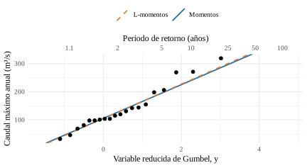
Cómo leer un papel de probabilidad
- Curvatura en todo el rango: la asimetría de los datos no es la del modelo. En el ejemplo, los logaritmos tienen \(C_s = -0.40\) y los dos caudales menores caen bajo la recta log-normal.
- Un punto aislado en un extremo: posible atípico. Se revisa su origen antes de quitarlo.
- Cola superior que se aleja hacia arriba: el modelo subestima las crecidas de diseño. En el papel de Gumbel, 319 m³/s queda unos 30 m³/s sobre la recta.
Ninguna de las dos es claramente la mejor: conviene probar una distribución de tres parámetros (GEV o log-Pearson tipo III, clase 3.5) y las pruebas de bondad de ajuste (clase 3.6).
Las posiciones dependen solo del orden de los datos: no extrapolan ni dan intervalos de confianza.
Papel de Gumbel interactivo
\(a\): constante de la posición de graficación, \(p_m = \frac{m - a}{n + 1 - 2a}\) (0 Weibull, 0.4 Cunnane, 0.44 Gringorten, 0.5 Hazen). Al moverla se mueven los puntos, no las rectas.
3.4 Distribuciones para valores medios
Capítulo 14 del libro
Caudales que se superan con cierta frecuencia
¿Qué caudal medio mensual no se supera en el 90 % de los meses? ¿Qué tan seco puede ser un marzo?
- Totales y promedios (lluvia anual, caudal medio mensual) resultan de sumar muchos valores y cubren todo el rango de resultados.
- Se describen con la normal, la log-normal y la gamma.
- Todas se pueden escribir con la forma general del factor de frecuencia (Chow et al., 1988):
\[ x_T = \bar{x} + K_T\, s \]
| Símbolo | Qué es | Unidad |
|---|---|---|
| \(x_T\) | Valor de periodo de retorno \(T\) | Las de \(x\) |
| \(\bar{x}\), \(s\) | Media y desviación estándar de los datos | Las de \(x\) |
| \(K_T\) | Factor de frecuencia: depende de la distribución y de \(T\) | — |
En esta clase: normal y teorema del límite central, log-normal de dos y tres parámetros, gamma y Pearson tipo III.
Factor de frecuencia: qué es y cómo se obtiene
\(K_T\) dice a cuántas desviaciones estándar sobre la media está el valor de periodo de retorno \(T\). Cada distribución tiene su propio \(K_T\):
| Distribución | Cómo se obtiene \(K_T\) |
|---|---|
| Normal | \(K_T = z_T\), la variable normal estándar con \(\Phi(z_T) = 1 - \frac{1}{T}\) (tabla o qnorm()) |
| Log-normal | El mismo \(z_T\), aplicado a los logaritmos: \(y_T = \bar{y} + z_T\, s_y\) y \(x_T = 10^{y_T}\) |
| Gumbel | \(K_T = -\dfrac{\sqrt{6}}{\pi}\left\{0.5772 + \ln\left[\ln\left(\dfrac{T}{T-1}\right)\right]\right\}\) |
| Pearson III y log-Pearson III | Depende de \(T\) y de la asimetría \(C_s\): tabla o aproximación de Kite (clase 3.5) |
Normal, lluvia anual con \(\bar{x} = 3298.3\) mm y \(s = 487.5\) mm, \(T = 10\) años. Solución:
- \(\Phi(z_{10}) = 1 - \frac{1}{10} = 0.90\).
- Tabla normal: \(z_{10} = 1.282\), así que \(K_{10} = 1.282\).
- \(x_{10} = 3298.3 + 1.282 \times 487.5 = 3923\) mm.
Gumbel, los 20 caudales con \(\bar{x} = 140.19\) y \(s = 76.59\) m³/s, \(T = 100\) años. Solución:
- \(\ln\left[\ln\left(\frac{100}{99}\right)\right] = \ln(0.01005) = -4.600\).
- \(K_{100} = -0.7797 \times (0.5772 - 4.600) = 3.137\).
- \(x_{100} = 140.19 + 3.137 \times 76.59 = 380\) m³/s, igual que con \(u + \alpha\, y_T\) por momentos.
Distribución normal
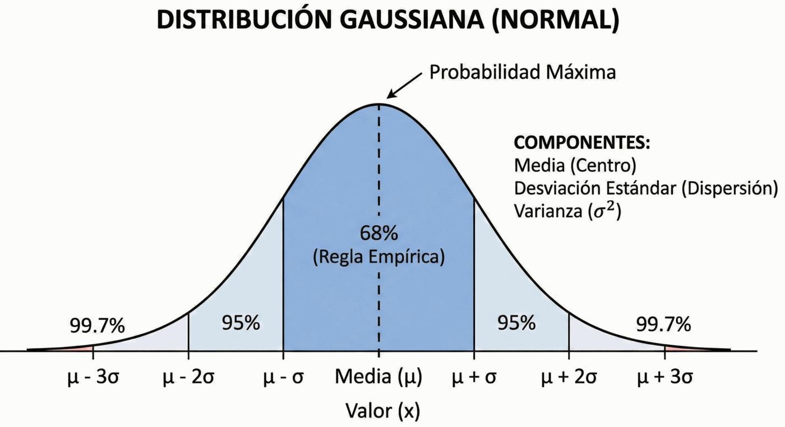
Función de densidad:
\[ f(x)=\dfrac{1}{\sigma\sqrt{2\pi}}\exp\left[-\dfrac{1}{2}\left(\dfrac{x-\mu}{\sigma}\right)^2\right] \]
Variable normal estándar (media 0, desviación 1):
\[ z = \dfrac{x-\mu}{\sigma} \]
| Símbolo | Qué es |
|---|---|
| \(x\) | Valor de la variable (por ejemplo, lluvia anual en mm) |
| \(\mu\), \(\sigma\) | Media y desviación estándar de la población (unidades de \(x\)) |
| \(f(x)\) | Densidad de probabilidad (FDP) |
| \(z\) | Variable normal estándar: a cuántas \(\sigma\) está \(x\) de \(\mu\) |
| \(\Phi(z)\) | FDA normal estándar, \(P(Z \le z)\); sin fórmula cerrada: tabla o pnorm() |
| \(C_s\), \(C_k\) | Asimetría y curtosis (clase 3.1): en la normal, \(C_s = 0\) (simétrica) y \(C_k = 3\) |
| \(K_T\) | Factor de frecuencia: en la normal, \(K_T = z_T\) con \(\Phi(z_T) = 1 - \frac{1}{T}\) |
Tabla de la normal estándar
| \(z\) | 0.00 | 0.01 | 0.02 | 0.03 | 0.04 | 0.05 | 0.06 | 0.07 | 0.08 | 0.09 |
|---|---|---|---|---|---|---|---|---|---|---|
| 0.0 | 0.5000 | 0.5040 | 0.5080 | 0.5120 | 0.5160 | 0.5199 | 0.5239 | 0.5279 | 0.5319 | 0.5359 |
| 0.1 | 0.5398 | 0.5438 | 0.5478 | 0.5517 | 0.5557 | 0.5596 | 0.5636 | 0.5675 | 0.5714 | 0.5753 |
| 0.2 | 0.5793 | 0.5832 | 0.5871 | 0.5910 | 0.5948 | 0.5987 | 0.6026 | 0.6064 | 0.6103 | 0.6141 |
| 0.3 | 0.6179 | 0.6217 | 0.6255 | 0.6293 | 0.6331 | 0.6368 | 0.6406 | 0.6443 | 0.6480 | 0.6517 |
| 0.4 | 0.6554 | 0.6591 | 0.6628 | 0.6664 | 0.6700 | 0.6736 | 0.6772 | 0.6808 | 0.6844 | 0.6879 |
| 0.5 | 0.6915 | 0.6950 | 0.6985 | 0.7019 | 0.7054 | 0.7088 | 0.7123 | 0.7157 | 0.7190 | 0.7224 |
| 0.6 | 0.7257 | 0.7291 | 0.7324 | 0.7357 | 0.7389 | 0.7422 | 0.7454 | 0.7486 | 0.7517 | 0.7549 |
| 0.7 | 0.7580 | 0.7611 | 0.7642 | 0.7673 | 0.7704 | 0.7734 | 0.7764 | 0.7794 | 0.7823 | 0.7852 |
| 0.8 | 0.7881 | 0.7910 | 0.7939 | 0.7967 | 0.7995 | 0.8023 | 0.8051 | 0.8078 | 0.8106 | 0.8133 |
| 0.9 | 0.8159 | 0.8186 | 0.8212 | 0.8238 | 0.8264 | 0.8289 | 0.8315 | 0.8340 | 0.8365 | 0.8389 |
| 1.0 | 0.8413 | 0.8438 | 0.8461 | 0.8485 | 0.8508 | 0.8531 | 0.8554 | 0.8577 | 0.8599 | 0.8621 |
| 1.1 | 0.8643 | 0.8665 | 0.8686 | 0.8708 | 0.8729 | 0.8749 | 0.8770 | 0.8790 | 0.8810 | 0.8830 |
| 1.2 | 0.8849 | 0.8869 | 0.8888 | 0.8907 | 0.8925 | 0.8944 | 0.8962 | 0.8980 | 0.8997 | 0.9015 |
| 1.3 | 0.9032 | 0.9049 | 0.9066 | 0.9082 | 0.9099 | 0.9115 | 0.9131 | 0.9147 | 0.9162 | 0.9177 |
| 1.4 | 0.9192 | 0.9207 | 0.9222 | 0.9236 | 0.9251 | 0.9265 | 0.9279 | 0.9292 | 0.9306 | 0.9319 |
| 1.5 | 0.9332 | 0.9345 | 0.9357 | 0.9370 | 0.9382 | 0.9394 | 0.9406 | 0.9418 | 0.9429 | 0.9441 |
| 1.6 | 0.9452 | 0.9463 | 0.9474 | 0.9484 | 0.9495 | 0.9505 | 0.9515 | 0.9525 | 0.9535 | 0.9545 |
| 1.7 | 0.9554 | 0.9564 | 0.9573 | 0.9582 | 0.9591 | 0.9599 | 0.9608 | 0.9616 | 0.9625 | 0.9633 |
| 1.8 | 0.9641 | 0.9649 | 0.9656 | 0.9664 | 0.9671 | 0.9678 | 0.9686 | 0.9693 | 0.9699 | 0.9706 |
| 1.9 | 0.9713 | 0.9719 | 0.9726 | 0.9732 | 0.9738 | 0.9744 | 0.9750 | 0.9756 | 0.9761 | 0.9767 |
| 2.0 | 0.9772 | 0.9778 | 0.9783 | 0.9788 | 0.9793 | 0.9798 | 0.9803 | 0.9808 | 0.9812 | 0.9817 |
| 2.1 | 0.9821 | 0.9826 | 0.9830 | 0.9834 | 0.9838 | 0.9842 | 0.9846 | 0.9850 | 0.9854 | 0.9857 |
| 2.2 | 0.9861 | 0.9864 | 0.9868 | 0.9871 | 0.9875 | 0.9878 | 0.9881 | 0.9884 | 0.9887 | 0.9890 |
| 2.3 | 0.9893 | 0.9896 | 0.9898 | 0.9901 | 0.9904 | 0.9906 | 0.9909 | 0.9911 | 0.9913 | 0.9916 |
| 2.4 | 0.9918 | 0.9920 | 0.9922 | 0.9925 | 0.9927 | 0.9929 | 0.9931 | 0.9932 | 0.9934 | 0.9936 |
| 2.5 | 0.9938 | 0.9940 | 0.9941 | 0.9943 | 0.9945 | 0.9946 | 0.9948 | 0.9949 | 0.9951 | 0.9952 |
| 2.6 | 0.9953 | 0.9955 | 0.9956 | 0.9957 | 0.9959 | 0.9960 | 0.9961 | 0.9962 | 0.9963 | 0.9964 |
| 2.7 | 0.9965 | 0.9966 | 0.9967 | 0.9968 | 0.9969 | 0.9970 | 0.9971 | 0.9972 | 0.9973 | 0.9974 |
| 2.8 | 0.9974 | 0.9975 | 0.9976 | 0.9977 | 0.9977 | 0.9978 | 0.9979 | 0.9979 | 0.9980 | 0.9981 |
| 2.9 | 0.9981 | 0.9982 | 0.9982 | 0.9983 | 0.9984 | 0.9984 | 0.9985 | 0.9985 | 0.9986 | 0.9986 |
| 3.0 | 0.9987 | 0.9987 | 0.9987 | 0.9988 | 0.9988 | 0.9989 | 0.9989 | 0.9989 | 0.9990 | 0.9990 |
Cómo se lee la tabla normal
La tabla da \(\Phi(z) = P(Z \le z)\), el área bajo la curva normal estándar a la izquierda de \(z\).
- Fila: \(z\) con un decimal.
- Columna: el segundo decimal.
- Cruce: \(\Phi(z)\). Ejemplo: \(z = 1.28\) → fila 1.2, columna 0.08: \(\Phi = 0.8997\).
- Para \(z\) negativo: \(\Phi(-z) = 1 - \Phi(z)\). Ejemplo: \(\Phi(-1.28) = 1 - 0.8997 = 0.1003\).
- Al revés, dado \(\Phi\) hallar \(z\): se busca el valor dentro del cuadro y se interpola entre las dos columnas vecinas.
- En R:
pnorm(z)da \(\Phi(z)\) yqnorm(p)da \(z\).
Teorema del límite central: la idea
¿Por qué tantas variables se parecen a una normal? Porque resultan de sumar muchos efectos pequeños e independientes.
- Un día de lluvia puede ser 0 o 150 mm: la lluvia diaria es muy asimétrica.
- La lluvia anual suma unos 365 días. Los días muy secos y los muy lluviosos se compensan, y los totales se agrupan alrededor de un valor central.
- El teorema dice que esa compensación siempre lleva a una normal, sea cual sea la forma de los valores que se suman.
El promedio \(\bar{X}_n\) de \(n\) valores tiende a una normal con:
\[ \text{media } \mu \qquad \text{y desviación } \dfrac{\sigma}{\sqrt{n}} \]
| Símbolo | Qué es |
|---|---|
| \(n\) | Cantidad de valores que se suman o promedian |
| \(\bar{X}_n\) | Promedio de esos \(n\) valores |
| \(\mu\), \(\sigma\) | Media y desviación estándar de cada valor individual |
Condiciones: valores independientes y con media y varianza finitas.
Teorema del límite central: un experimento

- Se parte de una población exponencial con \(\mu = 1\) y \(\sigma = 1\), muy asimétrica (panel \(n = 1\)).
- Se toman \(n\) valores al azar y se calcula su promedio; se repite 5000 veces.
- Las barras son el histograma de esos 5000 promedios. La curva roja es la normal que predice el teorema: media 1 y desviación \(\frac{1}{\sqrt{n}}\).
- Con \(n = 4\) ya hay forma de campana, todavía sesgada; con \(n = 30\) las barras casi coinciden con la curva.
Consecuencia: la lluvia anual de climas húmedos suele ser casi normal, aunque la diaria no lo sea. Los máximos anuales no son promedios, y por eso necesitan otras distribuciones (clase 3.5).
Usos y límites de la normal
Sirve para:
- Lluvias y caudales anuales o mensuales con poca asimetría.
- Errores de medición, ruido de modelos estocásticos e inferencia sobre parámetros.
No sirve para crecidas:
- Da probabilidad a valores negativos, que importa cuando el \(CV\) es grande.
- Es simétrica; los máximos anuales tienen cola larga a la derecha. Subestima los eventos raros y lleva a diseños inseguros.
Una normal ajustada a caudales máximos puede pasar una prueba de bondad de ajuste en el centro y fallar justo en la cola de diseño (clase 3.6).
Ejemplo: caudal medio mensual
Normal con \(\mu = 12.0\) m³/s y \(\sigma = 3.0\) m³/s.
Solución:
- \(P(Q \le 15)\): \(z = \dfrac{15 - 12}{3} = 1.00\). Tabla, fila 1.0 y columna 0.00: \(\Phi(1.00) = 0.8413\).
- \(P(Q > 18)\): \(z = \dfrac{18 - 12}{3} = 2.00\). Tabla, fila 2.0 y columna 0.00: \(\Phi = 0.9772\), así que \(P = 1 - 0.9772 = 0.0228\).
- Percentil 90: se busca 0.90 dentro del cuadro. Está entre 0.8997 (\(z = 1.28\)) y 0.9015 (\(z = 1.29\)); interpolando, \(z_{0.90} = 1.2816\). Entonces \(x = 12.0 + 1.2816 \times 3.0 = 15.84\) m³/s.
Filas de la tabla que se usan:
| \(z\) | 0.00 | ⋯ | 0.08 | 0.09 |
|---|---|---|---|---|
| 1.0 | 0.8413 | ⋯ | 0.8599 | 0.8621 |
| 1.2 | 0.8849 | ⋯ | 0.8997 | 0.9015 |
| 2.0 | 0.9772 | ⋯ | 0.9812 | 0.9817 |
En R: pnorm(15, 12, 3), 1 - pnorm(18, 12, 3) y qnorm(0.90, 12, 3).
Si 18 m³/s inunda una toma de agua, se espera que ocurra en unos 2 meses de cada 100.
Distribución log-normal
Si los logaritmos de los datos son normales, los datos son log-normales. Aparece cuando muchos efectos se multiplican en vez de sumarse. En la práctica se trabaja con los logaritmos como si fueran una normal y al final se devuelve el resultado a caudal:
- Logaritmo de cada dato, \(y = \ln x\).
- Media \(\mu_y\) y desviación \(\sigma_y\) de los logaritmos.
- \(z_T\) de la tabla normal y \(y_T = \mu_y + z_T\,\sigma_y\).
- \(x_T = e^{y_T}\).
Densidad:
\[ f(x)=\dfrac{1}{x\,\sigma_y\sqrt{2\pi}}\exp\left[-\dfrac{1}{2}\left(\dfrac{\ln x-\mu_y}{\sigma_y}\right)^2\right], \quad x>0 \]
Nivel de retorno:
\[ x_T = \exp\left(\mu_y + z_T\,\sigma_y\right) \]
| Símbolo | Qué es |
|---|---|
| \(x\) | Valor de la variable (\(x > 0\)) |
| \(Y = \ln x\) | Logaritmo natural, que sigue una normal |
| \(\mu_y\), \(\sigma_y\) | Media y desviación estándar de \(Y\) |
| \(z_T\) | Normal estándar con \(\Phi(z_T) = 1 - \frac{1}{T}\) |
| \(x_T\) | Valor de periodo de retorno \(T\) |
Log-normal: estimación de los parámetros
Por momentos, con la media \(\bar{x}\) y la desviación \(s\) de los datos:
\[ \sigma_y^2 = \ln\left(1+\dfrac{s^2}{\bar{x}^2}\right) \qquad \mu_y = \ln \bar{x} - \dfrac{\sigma_y^2}{2} \]
Por máxima verosimilitud: \(\mu_y\) y \(\sigma_y\) son la media y la desviación estándar de los \(\ln x\) de los datos.
Log-normal de tres parámetros: \(\ln(x - \xi)\) es normal (Stedinger et al., 1993):
\[ \hat{\xi} = \dfrac{x_{(1)}\,x_{(n)} - x_{\text{med}}^2}{x_{(1)} + x_{(n)} - 2\,x_{\text{med}}} \]
| Símbolo | Qué es |
|---|---|
| \(\xi\) | Límite inferior (unidades de \(x\)) |
| \(x_{(1)}\), \(x_{(n)}\) | Menor y mayor dato |
| \(x_{\text{med}}\) | Mediana de los datos |
Ejemplo: caudal de 50 años con la log-normal
15 caudales máximos anuales (m³/s, datos hipotéticos): 215, 320, 185, 410, 280, 350, 240, 380, 295, 265, 330, 310, 275, 290 y 420.
Solución:
- Logaritmos: \(\ln 215 = 5.3706\), \(\ln 320 = 5.7683\), …; suman 85.4183.
- \(\bar{y} = \dfrac{85.4183}{15} = 5.6946\) y \(s_y = 0.2279\).
- \(\Phi(z_{50}) = 1 - \frac{1}{50} = 0.98\). En la tabla, 0.98 está entre 0.9798 (\(z = 2.05\)) y 0.9803 (\(z = 2.06\)): \(z_{50} = 2.0537\).
- \(y_{50} = 5.6946 + 2.0537 \times 0.2279 = 6.1626\) y \(Q_{50} = e^{6.1626} = 475\) m³/s.
- \(C_{s,y} = -0.40\): los logaritmos tienen asimetría negativa.
- \(\hat{\xi} = \frac{185 \times 420 - 295^2}{185 + 420 - 590} = -622\) m³/s.
Fila de la tabla que se usa:
| \(z\) | ⋯ | 0.05 | 0.06 | ⋯ |
|---|---|---|---|---|
| 2.0 | ⋯ | 0.9798 | 0.9803 | ⋯ |
- Un límite inferior negativo no tiene sentido físico: la LN3 no mejora a la LN2.
- Con asimetría negativa en los logaritmos conviene la log-Pearson tipo III (clase 3.5).
Distribución gamma: qué es y cuándo se usa
- Describe variables que no pueden ser negativas y que tienen cola larga a la derecha: muchos valores bajos y unos pocos muy altos.
- Ejemplo típico: la lluvia de un mes de la época seca. Casi siempre llueve poco, nunca menos de 0, y algún año llueve mucho.
- Su forma cambia con un solo parámetro, \(\beta\): con \(\beta\) pequeño es muy asimétrica; con \(\beta\) grande se parece a la normal.
- Usos en hidrología:
- Lluvia diaria, mensual o estacional.
- Índice de precipitación estandarizado (SPI), para sequías.
- Hidrograma unitario de Nash (Tema 4).
- Con \(\beta = 1\) es la distribución exponencial.
Distribución gamma
Densidad y momentos:
\[ f(x)=\dfrac{x^{\beta-1}\, e^{-x/\alpha}}{\alpha^{\beta}\,\Gamma(\beta)}, \quad x \ge 0 \]
\[ \mu = \alpha\beta, \qquad \sigma^2 = \alpha^2\beta, \qquad C_s = \dfrac{2}{\sqrt{\beta}} \]
Estimación por momentos: \(\hat{\beta} = \dfrac{\bar{x}^2}{s^2}\) y \(\hat{\alpha} = \dfrac{s^2}{\bar{x}}\).
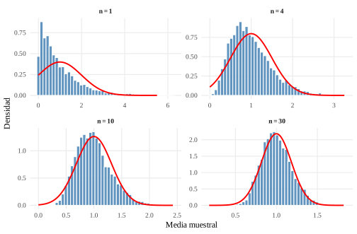
| Símbolo | Qué es |
|---|---|
| \(\beta\) | Parámetro de forma (adimensional) |
| \(\alpha\) | Parámetro de escala (unidades de \(x\)) |
| \(\Gamma(\beta)\) | Función gamma; si \(\beta\) es entero, \((\beta - 1)!\) |
| \(\mu\), \(\sigma^2\) | Media y varianza de la distribución |
| \(C_s\) | Coeficiente de asimetría |
| \(\bar{x}\), \(s\) | Media y desviación estándar de los datos |
La figura muestra la gamma con \(\alpha = 2\) y varios \(\beta\): al crecer \(\beta\), la curva se vuelve más simétrica.
Cuantil de la gamma
La gamma no tiene un cuantil con fórmula cerrada. La aproximación de Wilson & Hilferty (1931) lo calcula con la normal estándar:
\[ x_p \approx \alpha\,\beta \left(1 - \dfrac{1}{9\beta} + z_p \sqrt{\dfrac{1}{9\beta}}\right)^{3} \]
| Símbolo | Qué es |
|---|---|
| \(p\) | Probabilidad de no excedencia |
| \(x_p\) | Valor con probabilidad de no excedencia \(p\) |
| \(z_p\) | Normal estándar con \(\Phi(z_p) = p\) |
| \(\alpha\), \(\beta\) | Escala y forma de la gamma |
Ejemplo con la gamma: un marzo seco
Lluvia de marzo de la estación base, 25 años: \(\bar{x} = 87.1\) mm, \(s = 59.9\) mm.
Solución:
Pregunta: ¿qué lluvia de marzo no se supera en 1 de cada 10 años (\(p = 0.10\))?
- Parámetros por momentos: \(\hat{\beta} = \dfrac{87.1^2}{59.9^2} = 2.116\) y \(\hat{\alpha} = \dfrac{59.9^2}{87.1} = 41.17\) mm.
- Normal estándar para \(p = 0.10\): \(\Phi(z) = 0.10\), \(z_{0.10} = -1.2816\) (tabla: \(\Phi(1.2816) = 0.90\) y \(\Phi(-z) = 1 - \Phi(z)\)).
- Términos de la fórmula de Wilson y Hilferty: \(\dfrac{1}{9 \times 2.116} = 0.0525\) y \(\sqrt{0.0525} = 0.2292\).
- Paréntesis: \(1 - 0.0525 + (-1.2816)(0.2292) = 0.6538\).
- \(x_{0.10} \approx \alpha\beta\,(0.6538)^3 = 87.1 \times 0.2795 = 24.3\) mm, con \(\alpha\beta = 87.1\) mm, la media.
- Por máxima verosimilitud: \(\beta = 2.66\) y \(x_{0.10} = 29.4\) mm.
- Tres marzos de más de 220 mm inflan \(s\) y la cola baja por momentos.
- Mes a mes, este ajuste es el primer paso del SPI.
En R, las funciones de la gamma son pgamma() (probabilidad) y qgamma() (cuantil): qgamma(0.10, shape = 2.116, scale = 41.17) da 24.4 mm, casi igual a la aproximación.
Pearson tipo III
Es una gamma con un parámetro más, de posición, para que la asimetría no quede fija.
Densidad:
\[ f(x)=\dfrac{(x-\delta)^{\beta-1}\, e^{-(x-\delta)/\alpha}}{\alpha^{\beta}\,\Gamma(\beta)} \]
Parámetros por momentos:
\[ \beta = \left(\dfrac{2}{C_s}\right)^2, \quad \alpha = \dfrac{s}{\sqrt{\beta}}, \quad \delta = \bar{x} - \alpha\,\beta \]
| Símbolo | Qué es |
|---|---|
| \(\delta\) | Posición: límite inferior si \(C_s > 0\) (unidades de \(x\)) |
| \(\alpha\), \(\beta\) | Escala y forma, como en la gamma |
| \(\bar{x}\), \(s\), \(C_s\) | Media, desviación estándar y asimetría de los datos |
- Con \(C_s < 0\), \(\alpha\) es negativo y la distribución tiene límite superior. Con asimetría pequeña se acerca a la normal.
- Su factor de frecuencia depende de \(T\) y de \(C_s\): cuadro de la diapositiva siguiente.
- Como es una gamma corrida en \(\delta\), se calcula con las funciones de la gamma: \(P(X \le x)\) es la gamma evaluada en \(x - \delta\); en R,
pgamma(x - delta, shape = beta, scale = alfa).
Tabla de factores de frecuencia de la Pearson tipo III
| \(C_s\) | 2 | 5 | 10 | 25 | 50 | 100 | 200 |
|---|---|---|---|---|---|---|---|
| -1.0 | 0.164 | 0.852 | 1.128 | 1.366 | 1.492 | 1.588 | 1.664 |
| -0.8 | 0.132 | 0.856 | 1.166 | 1.448 | 1.606 | 1.733 | 1.837 |
| -0.6 | 0.099 | 0.857 | 1.200 | 1.528 | 1.720 | 1.880 | 2.016 |
| -0.4 | 0.067 | 0.855 | 1.231 | 1.606 | 1.834 | 2.029 | 2.201 |
| -0.2 | 0.033 | 0.850 | 1.258 | 1.680 | 1.945 | 2.178 | 2.388 |
| 0.0 | 0.000 | 0.842 | 1.282 | 1.751 | 2.054 | 2.326 | 2.576 |
| 0.2 | -0.033 | 0.830 | 1.301 | 1.818 | 2.159 | 2.472 | 2.763 |
| 0.4 | -0.067 | 0.816 | 1.317 | 1.880 | 2.261 | 2.615 | 2.949 |
| 0.6 | -0.099 | 0.800 | 1.329 | 1.939 | 2.359 | 2.755 | 3.132 |
| 0.8 | -0.132 | 0.780 | 1.336 | 1.993 | 2.453 | 2.891 | 3.312 |
| 1.0 | -0.164 | 0.758 | 1.340 | 2.043 | 2.542 | 3.023 | 3.489 |
| 1.2 | -0.195 | 0.733 | 1.340 | 2.088 | 2.626 | 3.149 | 3.661 |
| 1.4 | -0.225 | 0.705 | 1.337 | 2.128 | 2.706 | 3.271 | 3.828 |
| 1.6 | -0.254 | 0.675 | 1.329 | 2.163 | 2.780 | 3.388 | 3.990 |
| 1.8 | -0.281 | 0.643 | 1.318 | 2.193 | 2.848 | 3.499 | 4.147 |
| 2.0 | -0.307 | 0.609 | 1.303 | 2.219 | 2.912 | 3.605 | 4.298 |
\[ x_T = \bar{x} + K_T\, s \]
Cómo se usa:
- Calcular \(\bar{x}\), \(s\) y \(C_s\) de los datos (de los logaritmos en la log-Pearson III, clase 3.5).
- Buscar la fila de \(C_s\) y la columna de \(T\).
- Si \(C_s\) cae entre dos filas, interpolar linealmente.
Con \(C_s = 0\) la fila es la normal: \(K_T = z_T\).
Tres distribuciones con la misma media
Con \(CV\) bajo las tres casi coinciden; al subir el \(CV\) se separan, sobre todo en la cola de diseño.
3.5 Distribuciones para valores extremos
Capítulo 14 del libro
Una serie y dos distribuciones
Si una serie de 30 años de caudales máximos se ajusta bien a dos distribuciones distintas, ¿dan las dos la misma crecida de 100 años?
- Casi nunca. Dentro del rango de los datos las curvas casi se superponen; fuera de él, donde está la crecida de diseño, se separan.
- Cada máximo anual es el mayor de muchos eventos del año, y la forma de su distribución depende de cómo decrece la cola de esos eventos.
En esta clase: teorema de Fisher, Tippett y Gnedenko, Gumbel, GEV, mínimos anuales, picos sobre umbral y log-Pearson tipo III, todas con su factor de frecuencia o su cuantil.
Teorema de Fisher, Tippett y Gnedenko
Si el máximo normalizado de \(n\) variables independientes converge a una distribución no degenerada \(G\) (Coles, 2001),
\[ \lim_{n \to \infty} P\left(\frac{M_n - b_n}{a_n} \le z\right) = G(z) \]
donde \(M_n\) es el máximo de \(n\) datos (por ejemplo, los 365 caudales diarios de un año), \(a_n > 0\) y \(b_n\) son constantes de escala y posición, y \(z\) es el valor normalizado. Entonces \(G\) es una de tres familias, cualquiera que sea la distribución de los datos diarios:
| Tipo | Cola de los datos | Límite |
|---|---|---|
| I, Gumbel | Exponencial (normal, gamma) | Sin límite superior; \(C_s = 1.1396\) |
| II, Fréchet | Potencial, pesada (Pareto) | Sin límite superior; valores raros mucho mayores |
| III, Weibull | Con un máximo que no se supera | Límite superior finito; se usa para mínimos |
Distribución Gumbel
FDA, con \(u\) el parámetro de posición (moda) y \(\alpha\) el de escala:
\[ F(x)=\exp\left[-\exp\left(-\frac{x-u}{\alpha}\right)\right] \]
Nivel de retorno \(x_T\), con la variable reducida de Gumbel \(y_T\):
\[ y_T = -\ln\left[-\ln\left(1-\frac{1}{T}\right)\right], \quad x_T = u + \alpha\, y_T \]
Forma de Chow, con \(\bar{x}\) y \(s\) de la muestra:
\[ x_T = \bar{x} + K_T\, s \]
Factor de frecuencia \(K_T\) de la Gumbel por momentos:
\[ K_T = -\frac{\sqrt{6}}{\pi}\left\{0.5772 + \ln\left[\ln\left(\frac{T}{T-1}\right)\right]\right\} \]
- Forma fija: \(C_s = 1.1396\) y \(C_k = 5.4\). Para \(T = 2.33\) años, \(K_T = 0\).
- Método de Gumbel para muestras finitas: \(\alpha = \frac{s}{\sigma_n}\) y \(u = \bar{x} - \bar{y}_n\,\alpha\), con \(\bar{y}_n\) y \(\sigma_n\) de la variable reducida de las posiciones de Weibull (Gumbel, 1958). Tienden a 0.5772 y 1.2825 cuando \(n\) crece; con muestras cortas dan cuantiles mayores.
Ejemplo: caudales de diseño con la Gumbel
20 caudales hipotéticos: \(\bar{x} = 283.75\) m³/s, \(s = 44.18\) m³/s. Solución:
- Muestras finitas (\(n = 20\): \(\bar{y}_n = 0.5236\), \(\sigma_n = 1.0628\)): \(\alpha = 41.57\), \(u = 261.98\) m³/s.
- Momentos: \(\alpha = 34.45\), \(u = 263.86\) m³/s.
- \(y_{100} = 4.6001\) y \(K_{100} = -0.7797\,(0.5772 - 4.6001) = 3.1367\).
- \(Q_{100}\): 453.2 (muestras finitas) y \(283.75 + 3.1367 \times 44.18 = 422.3\) m³/s.

Diferencia de 7 %: el método de muestras finitas no es más preciso, es otro estimador.
Distribución GEV
Distribución general de valores extremos: une en una sola fórmula la Gumbel, la Fréchet y la Weibull invertida.
FDA:
\[ F(x)=\exp\left\{-\left[1+\xi\left(\frac{x-\mu}{\sigma}\right)\right]^{-1/\xi}\right\} \]
Nivel de retorno:
\[ x_T = \mu + \frac{\sigma}{\xi}\left\{\left[-\ln\left(1-\frac{1}{T}\right)\right]^{-\xi} - 1\right\} \]
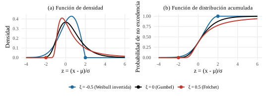
| Símbolo | Qué es |
|---|---|
| \(\mu\) | Parámetro de posición (unidades de \(x\)) |
| \(\sigma\) | Parámetro de escala (unidades de \(x\)) |
| \(\xi\) | Parámetro de forma (adimensional) |
| \(x_T\) | Valor de periodo de retorno \(T\) |
- \(\xi = 0\): Gumbel. \(\xi > 0\): Fréchet. \(\xi < 0\): Weibull invertida, con límite \(\mu - \frac{\sigma}{\xi}\). Ojo:
lmomusa \(k = -\xi\).
La forma decide el caudal de diseño

- Hasta unos 10 años las tres curvas coinciden; para 1000 años la Fréchet da más del doble que la Weibull invertida.
- Con 30 años de registro, la parte derecha es extrapolación pura: el \(\xi\) estimado decide el caudal de diseño.
Estimación de la GEV por L-momentos
Aproximación de Hosking et al. (1985), a partir de los L-momentos de la muestra: \(\lambda_1\) (media), \(\lambda_2\) (escala) y \(\tau_3\) (L-asimetría).
- Valor auxiliar \(c\) y forma \(k = -\xi\) (notación de Hosking):
\[ c = \frac{2}{3+\tau_3} - \frac{\ln 2}{\ln 3}, \qquad k \approx 7.8590\,c + 2.9554\,c^2 \]
- Escala \(\sigma\) y posición \(\mu\), con \(\Gamma\) la función gamma:
\[ \sigma = \frac{\lambda_2\,k}{\left(1-2^{-k}\right)\Gamma(1+k)}, \qquad \mu = \lambda_1 - \frac{\sigma\left[1-\Gamma(1+k)\right]}{k} \]
- Error menor que 0.0009 en \(k\) para \(-0.5 \le \tau_3 \le 0.5\).
- Con menos de unos 50 años, los L-momentos dan cuantiles menos variables que la máxima verosimilitud.
- La forma se estima con mucha incertidumbre: siempre con intervalos de confianza y, si hay varias estaciones, con análisis regional.
Ejemplo: lluvia máxima anual con la GEV
59 años de una estación hipotética. Solución:
- \(\lambda_1 = 144.94\), \(\lambda_2 = 25.76\) mm, \(\tau_3 = 0.250\).
- \(c = -0.0155\), \(k = -0.1211\): \(\xi = 0.121\).
- \(\sigma = 32.80\) y \(\mu = 121.58\) mm.
- \(x_{100} = 121.58 + \frac{32.80}{0.1211}(1.7458 - 1) = 323.5\) mm.
- Máxima verosimilitud: 305.9 mm, intervalo de 95 % de 231 a 381 mm.
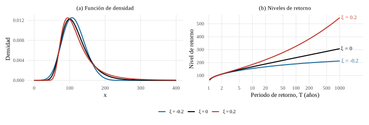
El mismo cálculo con extRemes
fevd() usa la convención de Coles (\(\xi\)); lmom usa \(k = -\xi\).
Mínimos anuales
\(\min(X_i) = -\max(-X_i)\): se ajusta la GEV a \(-x\) y se devuelve el signo. Como el caudal no baja de cero, la forma más usada es la Weibull de dos parámetros:
FDA, con \(\lambda\) la escala (m³/s) y \(k\) la forma:
\[ F(x) = 1 - \exp\left[-\left(\frac{x}{\lambda}\right)^{k}\right] \]
Mínimo de \(T\) años (probabilidad \(\frac{1}{T}\) de no superar \(x_T\)):
\[ x_T = \lambda\left[-\ln\left(1 - \frac{1}{T}\right)\right]^{1/k} \]
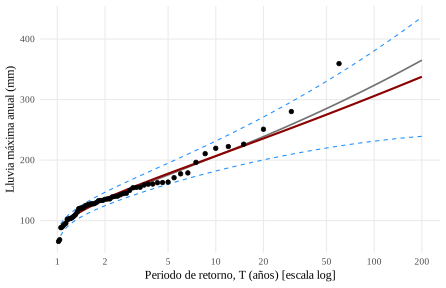
- 60 mínimos anuales generados (6.1 m³/s el menor).
- GEV a \(-x\): \(\xi = -0.91\) y límite inferior de 9.3 m³/s, por encima del menor dato. No es compatible.
- Weibull por momentos: \(k = 1.893\), \(\lambda = 27.92\) y \(x_{100} = 2.5\) m³/s.
Picos sobre umbral y Pareto generalizada
Excesos sobre un umbral alto \(u\) (Coles, 2001; Pickands, 1975):
FDA de los excesos \(y = x - u\), con escala \(\sigma_u\) y forma \(\xi\):
\[ H(y) = 1 - \left(1 + \frac{\xi\, y}{\sigma_u}\right)^{-\frac{1}{\xi}} \]
Periodo de retorno \(T_E\) de la serie de excedencias, a partir del \(T\) de la serie anual:
\[ T_E = \frac{-1}{\ln\left(1 - \frac{1}{T}\right)} \]
Nivel de retorno, con \(\lambda\) el número medio de eventos por año:
\[ x_{T} = u + \frac{\sigma_u}{\xi}\left[\left(\lambda\, T_E\right)^{\xi} - 1\right] \]
- Número de eventos por año: Poisson con tasa \(\lambda\). Magnitud: GP con la misma forma \(\xi\) de la GEV.
- L-momentos de los excesos: \(k = \frac{\lambda_1}{\lambda_2} - 2\), \(\sigma_u = (1 + k)\lambda_1\), \(\xi = -k\).
- Independencia: los días seguidos sobre el umbral forman un evento; de cada uno se toma el pico.
Máximos anuales o picos sobre umbral
| Característica | Máximos anuales | Picos sobre umbral |
|---|---|---|
| Datos que usa | Un valor por año | Todos los eventos independientes sobre el umbral |
| Distribución | GEV, Gumbel, log-Pearson III, otras | Generalizada de Pareto para la magnitud y Poisson para el número |
| Decisiones del analista | Ninguna, salvo el año hidrológico | Umbral y criterio de independencia |
| Ventaja | Sencillo, independencia casi garantizada | Más información con el mismo registro; útil para periodos de retorno cortos |
| Desventaja | Descarta eventos grandes de años húmedos; registros cortos dan poca información | El resultado depende del umbral y de la separación de eventos |
Con más de unos 30 años y \(T \ge 10\) años los dos métodos dan resultados parecidos; con registros cortos o eventos frecuentes, picos sobre umbral aprovecha mejor la información (Madsen et al., 1997).
Cómo escoger el umbral
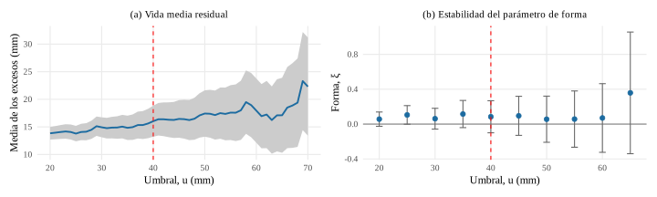
- Vida media residual: desde el umbral adecuado, la media de los excesos crece en línea recta.
- Estabilidad: la forma estimada se mantiene casi constante.
- Entre 2 y 5 eventos por año en promedio.
Ejemplo: lluvia diaria por picos sobre umbral
30 años de lluvia diaria sintética; \(u = 40\) mm. Solución:
- 145 eventos: \(\lambda = 4.833\) por año.
- Excesos: \(\lambda_1 = 16.19\), \(\lambda_2 = 8.51\) mm.
- \(k = -0.0973\), \(\xi = 0.097\), \(\sigma_u = 14.62\) mm.
- \(T_E = 99.5\): \(x_{100} = 40 + \frac{14.62}{0.0973}(1.824 - 1) = 163.8\) mm.
- GEV de los 30 máximos: 203 mm (50 a 356 mm); la GP tiene un intervalo tres veces más angosto.

Distribución log-Pearson tipo III
Norma en Estados Unidos desde 1967 (England et al., 2019; Interagency Advisory Committee on Water Data, 1982). \(y = \log_{10} x\) sigue una Pearson tipo III; con \(G = 0\) es la log-normal.

- \(y_i = \log_{10} x_i\).
- \(\bar{y}\), \(s_y\) y la asimetría \(G\) de los logaritmos.
- \(K_T\) de tablas o de Kite (1977), con \(k = \frac{G}{6}\) y \(z\) la variable normal estándar de probabilidad \(1 - \frac{1}{T}\):
\[ \begin{aligned} K_T ={}& z + (z^2-1)k + \tfrac{1}{3}(z^3-6z)k^2 \\ &- (z^2-1)k^3 + zk^4 + \tfrac{1}{3}k^5 \end{aligned} \]
- \(y_T = \bar{y} + K_T\, s_y\) y \(x_T = 10^{y_T}\).
Ejemplo: caudales de diseño con la LP3
Los 20 caudales de la clase 3.3. Solución:
- Con \(y = \log_{10} Q\): \(\bar{y} = 2.0839\), \(s_y = 0.2478\) y asimetría \(G = -0.396\).
- \(T = 100\): \(\Phi(z) = 0.99\) da \(z = 2.3263\) (tabla normal); \(k = \frac{G}{6} = -0.0660\).
- Con la fórmula de Kite: \(K_{100} = 2.3263 - 0.2913 - 0.0020 + 0.0013 = 2.0343\).
- Con la tabla de la Pearson III, interpolando entre \(C_s = -0.4\) y \(-0.2\): \(K_{100} = 2.029 + \frac{-0.396 + 0.4}{0.2}\,(2.178 - 2.029) = 2.032\), casi igual.
- \(y_{100} = 2.0839 + 2.0343 \times 0.2478 = 2.5880\) y \(Q_{100} = 10^{2.5880} = 387\) m³/s.
| \(C_s\) | \(T = 50\) | \(T = 100\) |
|---|---|---|
| −0.4 | 1.834 | 2.029 |
| −0.2 | 1.945 | 2.178 |
- \(T = 50\): \(K_{50} = 1.8369\) y \(Q_{50} = 346\) m³/s.
Con 20 años, \(G = -0.40\) es muy incierta: el Boletín 17C la pondera con una asimetría regional.
Factores de frecuencia
| Distribución | \(K_T\) |
|---|---|
| Normal | \(z_T\) |
| Log-normal | \(z_T\), aplicado a \(\ln x\): \(y_T = \bar{y} + z_T\, s_y\) |
| Gumbel (momentos) | \(-\frac{\sqrt{6}}{\pi}\left\{0.5772 + \ln\left[\ln\left(\frac{T}{T-1}\right)\right]\right\}\) |
| Pearson tipo III | Kite con \(G\) de los datos |
| Log-Pearson tipo III | Kite con \(G\) de \(\log_{10} x\), aplicado a los logaritmos |
La GEV y la GP no se escriben con un \(K_T\) que dependa solo de \(T\): su cuantil sale de sus tres parámetros.
Forma de la GEV
μ = 100, σ = 30 (unidades de la variable).
La escala vertical se ajusta a la curva más alta. Un cambio de 0.1 en \(\xi\), dentro del error típico con 30 años, mueve mucho el nivel de 100 años.
3.6 Bondad de ajuste e incertidumbre del caudal de diseño
Capítulos 14 y 31 del libro
Elegir la distribución de diseño
Cuatro distribuciones se ajustan a los mismos 20 caudales y ninguna se rechaza. ¿Con cuál se diseña?
- Las pruebas de bondad de ajuste descartan modelos claramente malos, pero rara vez escogen uno solo.
- La decisión combina pruebas, papel de probabilidad, información regional, parsimonia y consecuencias.
- El caudal de diseño se entrega con su intervalo de confianza.
En esta clase: pruebas chi-cuadrado, de Kolmogórov y Smirnov y de Anderson y Darling; criterios AIC y BIC; intervalo de confianza por remuestreo; poblaciones mixtas, ceros e información histórica.
Pruebas de bondad de ajuste
Sirven para comprobar si una distribución ya ajustada describe bien los datos, antes de usarla para calcular el caudal de diseño.
\[ H_0:\ \text{los datos provienen de la distribución } F_0 \]
| Símbolo | Qué es |
|---|---|
| \(H_0\) | Hipótesis nula: el modelo describe los datos |
| \(F_0\) | Función de distribución acumulada (FDA) del modelo ajustado |
| \(\alpha\) | Nivel de significancia: probabilidad aceptada de rechazar un modelo correcto (casi siempre 0.05) |
| Valor crítico | Valor del estadístico que solo se supera con probabilidad \(\alpha\) si \(H_0\) es cierta; se lee en una tabla |
Pasos, iguales en las tres pruebas: (1) calcular el estadístico, que mide la diferencia entre los datos y \(F_0\); (2) buscar el valor crítico para \(\alpha\); (3) si el estadístico es mayor, se rechaza \(H_0\).
- No rechazar solo dice que la muestra no da evidencia contra el modelo. Con 20 o 30 datos, varias distribuciones pasan la misma prueba.
Las tablas clásicas suponen parámetros conocidos de antemano. Si se estimaron con la misma muestra, el modelo queda más cerca de los datos y la prueba rechaza muy poco: hacen falta valores críticos corregidos (Wilks, 2019).
Prueba chi-cuadrado
Compara cuántos datos caen en cada clase con cuántos deberían caer según el modelo.
Estadístico de la prueba:
\[ \chi^2 = \sum_{i=1}^{k} \frac{(O_i - E_i)^2}{E_i} \]
Grados de libertad:
\[ \nu = k - 1 - m \]
| Símbolo | Qué es |
|---|---|
| \(k\) | Número de clases |
| \(O_i\) | Datos observados en la clase \(i\) |
| \(E_i\) | Datos esperados en la clase \(i\): \(n\) por su probabilidad según \(F_0\) |
| \(n\) | Número de datos |
| \(m\) | Parámetros estimados con los datos |
| \(\nu\) | Grados de libertad |
- Se pide \(E_i \ge 5\). Con 20 datos caben cuatro clases; conviene que sean equiprobables, de probabilidad 0.25 cada una, para que todas tengan \(E_i = 5\).
- Se rechaza \(H_0\) si \(\chi^2\) supera el valor de la tabla de \(\chi^2\) para \(\nu\) y \(1 - \alpha\).
Ejemplo: chi-cuadrado
Los 20 caudales máximos anuales (m³/s, hipotéticos), con la Gumbel por momentos: \(u = 105.72\) y \(\alpha = 59.72\) m³/s. ¿Se rechaza la Gumbel? Solución:
- Límites de cuatro clases equiprobables: se despeja \(x\) de la FDA de Gumbel, \(x = u - \alpha \ln(-\ln F)\), con \(F = 0.25\), 0.50 y 0.75. Con \(F = 0.25\): \(x = 105.72 - 59.72 \ln(-\ln 0.25) = 105.72 - 59.72(0.327) = 86.2\) m³/s; igual, 127.6 y 180.1 m³/s.
- Se cuentan los caudales de cada clase (\(O_i\)). Cada clase tiene probabilidad 0.25, así que \(E_i = 20 \times 0.25 = 5\).
| Clase (m³/s) | Caudales de la clase | \(O_i\) | \(E_i\) | \(\frac{(O_i - E_i)^2}{E_i}\) |
|---|---|---|---|---|
| ≤ 86.2 | 32.5, 46.0, 68.9, 81.3 | 4 | 5 | \(\frac{(4-5)^2}{5} = 0.2\) |
| 86.2 a 127.6 | 97.8, 98.2, 101, 104, 104, 115, 120 | 7 | 5 | \(\frac{(7-5)^2}{5} = 0.8\) |
| 127.6 a 180.1 | 131, 142, 144, 155 | 4 | 5 | 0.2 |
| > 180.1 | 198, 206, 269, 271, 319 | 5 | 5 | 0 |
| Suma | 20 | 20 | \(\chi^2 = 1.2\) |
Ejemplo: chi-cuadrado, decisión
- Grados de libertad: \(\nu = k - 1 - m = 4 - 1 - 2 = 1\), porque hay 4 clases y la Gumbel tiene 2 parámetros estimados con los datos.
- Valor crítico: en la tabla de \(\chi^2\), columna \(1 - \alpha = 0.95\), fila \(\nu = 1\).
| \(\nu\) | 1 | 2 | 3 | 4 | 5 |
|---|---|---|---|---|---|
| \(\chi^2_{0.95,\nu}\) | 3.84 | 5.99 | 7.81 | 9.49 | 11.07 |
- Decisión: \(\chi^2 = 1.2 < 3.84\), así que no se rechaza la Gumbel.
En R: qchisq(0.95, df = 1) da 3.84 y 1 - pchisq(1.2, df = 1) da \(p = 0.27\).
Con \(\nu = 1\) la prueba solo detecta diferencias muy grandes. Con pocos datos sirve para descartar modelos muy malos, no para escoger entre buenos.
Prueba de Kolmogórov y Smirnov
\[ D_n = \max_{1 \le i \le n} \left\{ \frac{i}{n} - F_0\!\left(x_{(i)}\right),\ F_0\!\left(x_{(i)}\right) - \frac{i-1}{n} \right\} \]

| Símbolo | Qué es |
|---|---|
| \(D_n\) | Mayor distancia vertical entre la FDA empírica y \(F_0\) |
| \(F_0\) | FDA del modelo que se prueba |
| \(x_{(i)}\) | Dato de orden \(i\), de menor a mayor |
| \(n\) | Tamaño de la muestra |
- Valor crítico con parámetros conocidos (\(\alpha = 0.05\)): \(\frac{1.36}{\sqrt{n}}\).
- Normal con parámetros estimados (Lilliefors): \(\frac{0.886}{\sqrt{n}}\) (Lilliefors, 1967).
- Es más sensible en el centro que en las colas, al revés de lo que interesa en extremos.
Ejemplo: Kolmogórov y Smirnov
Lluvia máxima anual de 53 años (mm, datos hipotéticos), \(\bar{x} = 140.87\) mm y \(s = 46.80\) mm. ¿Se ajusta una normal? ⬇ Descargar precipitacion_maxima_anual_1970_2022.csv
Solución:
- Se ordenan los 53 datos de menor a mayor.
- Para cada dato: \(z = \frac{x_{(i)} - \bar{x}}{s}\) y \(F_0 = \Phi(z)\), de la tabla normal.
- Se calculan las dos distancias de la fórmula, \(\frac{i}{n} - F_0\) y \(F_0 - \frac{i-1}{n}\).
- \(D_n\) es la mayor de todas: 0.138, en \(i = 32\).
| \(i\) | \(x_{(i)}\) (mm) | \(z\) | \(F_0\) | \(\frac{i}{n} - F_0\) | \(F_0 - \frac{i-1}{n}\) |
|---|---|---|---|---|---|
| 1 | 78.2 | −1.339 | 0.0903 | −0.071 | 0.090 |
| 2 | 86.9 | −1.153 | 0.1244 | −0.087 | 0.106 |
| ⋮ | |||||
| 31 | 136.7 | −0.089 | 0.4645 | 0.120 | −0.102 |
| 32 | 136.8 | −0.087 | 0.4653 | 0.138 | −0.120 |
| 33 | 149.8 | 0.191 | 0.5756 | 0.047 | −0.028 |
| ⋮ | |||||
| 53 | 310.5 | 3.624 | 0.9999 | 0.000 | 0.019 |
Por ejemplo, en \(i = 1\): \(z = \frac{78.2 - 140.87}{46.80} = -1.339\) y \(F_0 = 0.0903\); las distancias son \(\frac{1}{53} - 0.0903 = -0.071\) y \(0.0903 - \frac{0}{53} = 0.090\).
Ejemplo: Kolmogórov y Smirnov, decisión
- Valores críticos con \(\alpha = 0.05\) y \(n = 53\):
- Clásico, para parámetros conocidos: \(\frac{1.36}{\sqrt{53}} = 0.187\). Como \(0.138 < 0.187\), no se rechazaría la normal.
- Lilliefors, que corresponde aquí porque \(\bar{x}\) y \(s\) salieron de la misma muestra: \(\frac{0.886}{\sqrt{53}} = 0.122\). Como \(0.138 > 0.122\), se rechaza la normal (\(p = 0.013\)).
- Con la Gumbel por momentos, el mismo procedimiento da \(D_n = 0.070\), menor que los dos valores críticos: no se rechaza.
Usar el valor crítico para parámetros conocidos hace que casi cualquier modelo parezca aceptable. Es el error más común con esta prueba.
Distancia de Kolmogórov y Smirnov
Al desplazar el modelo se ve cuánto tiene que alejarse para que la prueba lo rechace.
Prueba de Anderson y Darling
Usa las diferencias de todos los datos y les da más peso en las colas, que es donde está el caudal de diseño (Anderson & Darling, 1954; Stephens, 1974).
\[ A^2 = -n - \frac{1}{n}\sum_{i=1}^{n}(2i-1)\left\{\ln F_0\!\left(x_{(i)}\right) + \ln\left[1 - F_0\!\left(x_{(n+1-i)}\right)\right]\right\} \]
| Símbolo | Qué es |
|---|---|
| \(A^2\) | Estadístico de la prueba; crece cuando el modelo se aleja de los datos |
| \(A^{2*}\) | El mismo estadístico corregido por haber estimado los parámetros con la muestra |
| \(x_{(i)}\) | Dato de orden \(i\), de menor a mayor; \(x_{(n+1-i)}\) es el de orden \(i\) contado desde el mayor |
| \(n\) | Tamaño de la muestra |
| \(F_0\) | FDA del modelo que se prueba |
| Modelo, parámetros estimados | Corrección | Crítico (\(\alpha = 0.05\)) |
|---|---|---|
| Normal | \(A^{2*} = A^2\left(1 + \frac{0.75}{n} + \frac{2.25}{n^2}\right)\) | 0.752 |
| Gumbel (máxima verosimilitud) | \(A^{2*} = A^2\left(1 + \frac{0.2}{\sqrt{n}}\right)\) | 0.757 |
Se rechaza \(H_0\) si \(A^{2*}\) supera el valor crítico.
Ejemplo: Anderson y Darling
La misma serie de 53 años. ¿Normal o Gumbel?
Solución con la normal (\(\bar{x} = 140.87\), \(s = 46.80\) mm):
- \(F_0\) de cada dato, como en el ejemplo anterior.
- Término \(i = 1\) de la suma, que une el menor dato con el mayor: \(\ln F_0(78.2) = \ln 0.0903 = -2.405\) y \(\ln[1 - F_0(310.5)] = \ln 0.000145 = -8.840\); \((2 \cdot 1 - 1)(-2.405 - 8.840) = -11.245\).
- Se suman los 53 términos y se aplica la fórmula: \(A^2 = 1.243\).
- Corrección: \(1 + \frac{0.75}{53} + \frac{2.25}{53^2} = 1.01495\); \(A^{2*} = 1.243 \times 1.01495 = 1.262\).
- \(1.262 > 0.752\): se rechaza la normal.
Solución con la Gumbel por máxima verosimilitud (\(u = 120.68\), \(\alpha = 33.08\) mm):
- \(F_0 = \exp\left[-\exp\left(-\frac{x - u}{\alpha}\right)\right]\) de cada dato.
- Término \(i = 1\): \(\ln F_0(78.2) = -3.611\) y \(\ln[1 - F_0(310.5)] = -5.739\).
- Suma de los 53 términos: \(A^2 = 0.327\).
- Corrección: \(1 + \frac{0.2}{\sqrt{53}} = 1.02747\); \(A^{2*} = 0.327 \times 1.02747 = 0.336\).
- \(0.336 < 0.757\): no se rechaza la Gumbel.
Con la normal, 310.5 mm tendría una probabilidad de excedencia de 0.00014 (uno en 7000 años): por eso su término pesa tanto.
Comparación de distribuciones
| Distribución | Parámetros | Q₁₀ (m³/s) | Q₅₀ (m³/s) | Q₁₀₀ (m³/s) | A² |
|---|---|---|---|---|---|
| Log-normal de dos parámetros | 2 | 252 | 392 | 458 | 0.312 |
| Gumbel (momentos) | 2 | 240 | 339 | 380 | 0.317 |
| GEV (L-momentos) | 3 | 241 | 368 | 430 | 0.273 |
| Log-Pearson tipo III (momentos) | 3 | 245 | 346 | 387 | 0.306 |
- Los cuatro \(A^2\) son parecidos y ninguno se rechaza. Para 10 años los caudales difieren menos de 5 %; para 100 años, 20 %.
- Dentro del rango de los datos las distribuciones coinciden; en la extrapolación se separan.
Criterios de información
Las pruebas dicen si un modelo se rechaza; los criterios de información ordenan los modelos que no se rechazaron. Premian el buen ajuste y castigan cada parámetro adicional. Se prefiere el menor valor.
Criterio de Akaike:
\[ AIC = -2\ln \hat{L} + 2k \]
Criterio bayesiano:
\[ BIC = -2\ln \hat{L} + k \ln n \]
Diferencia con el mejor modelo:
\[ \Delta = AIC - AIC_{\min} \]
| Símbolo | Qué es |
|---|---|
| \(\ln \hat{L}\) | Logaritmo de la verosimilitud máxima, del ajuste por máxima verosimilitud (sección 3.3) |
| \(k\) | Número de parámetros del modelo |
| \(n\) | Número de datos |
| \(AIC_{\min}\) | Menor AIC entre los modelos comparados |
| \(\Delta\) | Cuánto se aleja cada modelo del mejor |
- \(\Delta < 2\): respaldo parecido al del mejor modelo (Burnham & Anderson, 2002).
- El BIC castiga más los parámetros: con \(n = 20\), \(\ln 20 = 3.0 > 2\).
Ejemplo: AIC y BIC
Los 20 caudales, ajustados por máxima verosimilitud a cuatro modelos.
Solución para la Gumbel (\(k = 2\), \(\ln \hat L = -112.528\)):
- \(AIC = -2(-112.528) + 2 \times 2 = 225.06 + 4 = 229.06\)
- \(BIC = 225.06 + 2 \ln 20 = 225.06 + 5.99 = 231.05\)
- El menor AIC es el de la gamma, 228.81: \(\Delta = 229.06 - 228.81 = 0.25\).
Igual con los demás modelos.
| Modelo | \(k\) | \(\ln \hat L\) | AIC | \(\Delta\) | BIC |
|---|---|---|---|---|---|
| Gumbel | 2 | −112.528 | 229.06 | 0.25 | 231.05 |
| GEV | 3 | −112.461 | 230.92 | 2.11 | 233.91 |
| Log-normal | 2 | −112.614 | 229.23 | 0.42 | 231.22 |
| Gamma | 2 | −112.404 | 228.81 | 0 | 230.80 |
La GEV ajusta apenas mejor que la Gumbel, pero su tercer parámetro no compensa: es la de mayor AIC y BIC.
Los cuatro modelos quedan a menos de 2.2 del mejor y tienen un respaldo parecido. Aun así, su caudal de 100 años va de 365 a 442 m³/s: los criterios no resuelven la elección por sí solos.
Cómo escoger
- La norma o la práctica del lugar: si se exige una distribución, se usa, y las demás sirven de comparación.
- El papel de probabilidad: sin desviaciones sistemáticas en los datos mayores.
- La información regional: la forma de la cola se estima mejor con varias estaciones.
- La parsimonia: con 20 o 30 datos el tercer parámetro es muy incierto.
- Las consecuencias: si fallar es grave, se reporta el intervalo y se diseña del lado seguro.
No se promedian los caudales de varias distribuciones para “repartir” el error: cada una supone una forma distinta de la cola y el promedio no corresponde a ningún modelo.
Intervalo de confianza por remuestreo
El caudal de 100 años se estima con una sola muestra; otra muestra del mismo río daría otro valor. El remuestreo (bootstrap) simula esas otras muestras con los propios datos:
- Se sortean 45 años de los 45 observados, con reemplazo: un año puede salir dos veces y otro ninguna.
- Se ajusta la GEV a esa muestra y se calcula su \(x_{100}\).
- Se repite 2000 veces. Los percentiles 5 y 95 de los 2000 valores forman el intervalo de 90 %.
Ejemplo: 45 caudales máximos anuales hipotéticos, cuenca de 410 km². ⬇ Descargar caudal_maximo_region_hipotetica.csv

El caudal de diseño con su incertidumbre
Cuantil de la GEV:
\[ x_T = \mu + \frac{\sigma}{k}\left[1 - \left(-\ln F\right)^{k}\right], \quad F = 1 - \frac{1}{T} \]
| Símbolo | Qué es | Unidad |
|---|---|---|
| \(x_T\) | Caudal de periodo de retorno \(T\) | m³/s |
| \(\mu\), \(\sigma\) | Parámetros de posición y de escala | m³/s |
| \(k\) | Parámetro de forma, \(k = -\xi\) | — |
| \(F\) | Probabilidad de no excedencia | — |
| \(\lambda_1\), \(\lambda_2\), \(\tau_3\) | L-momentos de la muestra | m³/s, m³/s, — |
Estación hipotética con 45 años. Solución:
- L-momentos de los 45 caudales: \(\lambda_1 = 527.82\) m³/s, \(\lambda_2 = 125.99\) m³/s y \(\tau_3 = 0.226\).
- Parámetros de la GEV a partir de ellos: \(k = -0.0863\) (cola pesada), \(\sigma = 166.7\) m³/s y \(\mu = 416.1\) m³/s.
- Para \(T = 100\): \(F = 0.99\), \(-\ln 0.99 = 0.01005\) y \((0.01005)^{-0.0863} = 1.4870\).
- \(x_{100} = 416.1 + \frac{166.7}{-0.0863}(1 - 1.4870)\) \(= 416.1 + 940.7 = 1357\) m³/s.
- Remuestreo, 2000 veces: intervalo de 90 % de 965 a 1765 m³/s.
Con la LP3 el valor central es 1325 m³/s.
Remuestreo en R
El intervalo del paso 4 se obtiene con el paquete lmomco. Cada línea hace un paso del remuestreo:
q es el vector con los 45 caudales máximos anuales.
El intervalo, de 965 a 1765 m³/s, va de 29 % por debajo a 30 % por encima del valor central: es más grande que la diferencia entre la GEV y la LP3 (1357 frente a 1325 m³/s).
Casos especiales: poblaciones mixtas
En algunas cuencas las crecidas tienen dos orígenes, por ejemplo lluvias ordinarias y ciclones tropicales. Una sola distribución mezcla las dos y subestima la cola.
\[ F(x) = (1 - p)\,F_1(x) + p\,F_2(x) \]
| Símbolo | Qué es |
|---|---|
| \(F(x)\) | FDA de la serie completa |
| \(F_1\) | FDA de los años ordinarios |
| \(F_2\) | FDA de los años con ciclón |
| \(p\) | Fracción de años con ciclón |
Ejemplo (hipotético): \(F_1\) Gumbel con \(u = 150\), \(\alpha = 40\) m³/s; \(F_2\) Gumbel con \(u = 300\), \(\alpha = 90\) m³/s; \(p = 0.20\). Solución:
- Se busca \(x\) tal que \(F(x) = 0.99\), por tanteo.
- Con \(x = 567\) m³/s: \(F_1 = \exp[-\exp(-\frac{567 - 150}{40})] = 1.000\) y \(F_2 = \exp[-\exp(-\frac{567 - 300}{90})] = 0.950\).
- \(F = 0.80(1.000) + 0.20(0.950) = 0.990\). Entonces \(x_{100} \approx 567\) m³/s.
- Una sola Gumbel da 521 m³/s y los años ordinarios solos, 334 m³/s.
Casos especiales: ceros e información histórica
Series con ceros (años sin caudal en ríos efímeros, o sin lluvia):
\[ F(x) = p_0 + (1 - p_0)\,G(x) \]
Para un cuantil, se despeja \(G\):
\[ G = \frac{F - p_0}{1 - p_0} \]
| Símbolo | Qué es |
|---|---|
| \(p_0\) | Fracción de años con valor cero |
| \(G\) | FDA ajustada solo a los valores no nulos |
Si \(F \le p_0\), el cuantil es cero.
Información histórica (crecidas anteriores a la estación, por marcas o archivos):
| Símbolo | Qué es |
|---|---|
| \(h\) | Años del periodo histórico |
| \(X_0\) | Umbral: caudal que una crecida debía superar para quedar registrada |
| \(k\) | Crecidas históricas mayores que \(X_0\) |
- Las \(k\) crecidas entran con su valor en la verosimilitud; los \(h - k\) años restantes entran como “menores que \(X_0\)” (Stedinger & Cohn, 1986).
- Ejemplo: dos crecidas en 80 años suben \(Q_{100}\) de 365 a 421 m³/s.
Referencias
Anderson, T. W., & Darling, D. A. (1954). A test of goodness of fit. Journal of the American Statistical Association, 49(268), 765-769. https://doi.org/10.1080/01621459.1954.10501232
Brown, S. A., Schall, J. D., Morris, J. L., Doherty, C. L., Stein, S. M., & Warner, J. C. (2009). Urban drainage design manual (Hydraulic Engineering Circular 22, 3.ª ed., FHWA-NHI-10-009). Federal Highway Administration. https://www.fhwa.dot.gov/engineering/hydraulics/pubs/10009/10009.pdf
Burnham, K. P., & Anderson, D. R. (2002). Model selection and multimodel inference: A practical information-theoretic approach (2.ª ed.). Springer. https://doi.org/10.1007/b97636
Chow, V. T., Maidment, D. R., & Mays, L. W. (1988). Applied hydrology. McGraw-Hill.
Coles, S. (2001). An introduction to statistical modeling of extreme values. Springer. https://doi.org/10.1007/978-1-4471-3675-0
Cunnane, C. (1978). Unbiased plotting positions: a review. Journal of Hydrology, 37(3–4), 205-222. https://doi.org/10.1016/0022-1694(78)90017-3
D’Agostino, R. B., & Stephens, M. A. (1986). Goodness-of-fit techniques. Marcel Dekker.
England, J. F., Jr., Cohn, T. A., Faber, B. A., Stedinger, J. R., Thomas, W. O., Jr., Veilleux, A. G., Kiang, J. E., & Mason, R. R., Jr. (2019). Guidelines for determining flood flow frequency: Bulletin 17C. U.S. Geological Survey. https://doi.org/10.3133/tm4B5
Gumbel, E. J. (1958). Statistics of extremes. Columbia University Press.
Hamed, K. H., & Rao, A. R. (1998). A modified Mann-Kendall trend test for autocorrelated data. Journal of Hydrology, 204(1–4), 182-196. https://doi.org/10.1016/S0022-1694(97)00125-X
Hosking, J. R. M. (1990). L-moments: analysis and estimation of distributions using linear combinations of order statistics. Journal of the Royal Statistical Society: Series B (Methodological), 52(1), 105-124. https://doi.org/10.1111/j.2517-6161.1990.tb01775.x
Hosking, J. R. M., Wallis, J. R., & Wood, E. F. (1985). Estimation of the generalized extreme-value distribution by the method of probability-weighted moments. Technometrics, 27(3), 251-261. https://doi.org/10.1080/00401706.1985.10488049
Instituto Costarricense de Acueductos y Alcantarillados. (2017). Norma técnica para diseño y construcción de sistemas de abastecimiento de agua potable, de saneamiento y pluvial. AyA.
Interagency Advisory Committee on Water Data. (1982). Guidelines for determining flood flow frequency: Bulletin 17B of the Hydrology Subcommittee. U.S. Geological Survey, Office of Water Data Coordination.
Kite, G. W. (1977). Frequency and risk analyses in hydrology. Water Resources Publications.
Langbein, W. B. (1949). Annual floods and the partial-duration flood series. Transactions, American Geophysical Union, 30(6), 879-881. https://doi.org/10.1029/TR030i006p00879
Lilliefors, H. W. (1967). On the Kolmogorov-Smirnov test for normality with mean and variance unknown. Journal of the American Statistical Association, 62(318), 399-402. https://doi.org/10.1080/01621459.1967.10482916
Madsen, H., Rasmussen, P. F., & Rosbjerg, D. (1997). Comparison of annual maximum series and partial duration series methods for modeling extreme hydrologic events: 1. At-site modeling. Water Resources Research, 33(4), 747-757. https://doi.org/10.1029/96WR03848
Pickands, J. (1975). Statistical inference using extreme order statistics. The Annals of Statistics, 3(1), 119-131. https://doi.org/10.1214/aos/1176343003
Secretaría de Integración Económica Centroamericana. (2021). Manual de consideraciones técnicas, hidrológicas e hidráulicas para la infraestructura vial en Centroamérica (2.ª ed.). SIECA y Agencia de Cooperación Internacional del Japón (JICA). https://www.sieca.int/categoria-producto/conectividad-regional/acuerdos-manuales-tecnicos-e-instrumentos-juridicos/manuales-tecnicos
Stedinger, J. R., & Cohn, T. A. (1986). Flood frequency analysis with historical and paleoflood information. Water Resources Research, 22(5), 785-793. https://doi.org/10.1029/WR022i005p00785
Stedinger, J. R., Vogel, R. M., & Foufoula-Georgiou, E. (1993). Frequency analysis of extreme events. En D. R. Maidment (Ed.), Handbook of hydrology. McGraw-Hill.
Stephens, M. A. (1974). EDF statistics for goodness of fit and some comparisons. Journal of the American Statistical Association, 69(347), 730-737. https://doi.org/10.1080/01621459.1974.10480196
U.S. Bureau of Reclamation. (1987). Design of small dams (3.ª ed.). U.S. Department of the Interior, Bureau of Reclamation. https://www.usbr.gov/tsc/techreferences/mands/mands-abstracts/manabs1190.html
Wilks, D. S. (2019). Statistical methods in the atmospheric sciences (4.ª ed.). Elsevier.
Wilson, E. B., & Hilferty, M. M. (1931). The distribution of chi-square. Proceedings of the National Academy of Sciences, 17(12), 684-688. https://doi.org/10.1073/pnas.17.12.684
Hidrología Aplicada a la Ingeniería Civil · Ing. Edwin Matarrita S. · Universidad de Costa Rica